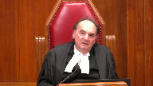

Jesse Dallas Hills v. His Majesty the King; His Majesty the King v. Ocean William Storm Hilbach, et al.
This transcript was made with automated artificial intelligence models and its accuracy has not been verified. Review the original webcast here.
Justice Wagner (00:00:25): Good morning, please be seated.
In the case of Jesse Dallas Ailes against Her Majesty the Queen, and Her Majesty the Queen against Ocean William Storm Hillback and Curtis Zvodesky.
In the case of Ailes against Her Majesty the Queen for the appellant Jesse Dallas Ailes, Heather Ferg, W.E. Brett-Code, QC, for the intervener, Criminal Lawyers Association Ontario, Janani Shanmuganathan, and Leroy Metcalfe, for the respondent, Her Majesty the Queen, Robert A. Farah, for the intervener, Attorney General of Ontario, Andrea Piasso, and Gregory Fermanuk, for the intervener, Attorney General for Saskatchewan, Grace Essien-David, for the intervener, Attorney General of Nova Scotia, written submissions only.
In the case of Her Majesty the Queen against William Hillback and Zvodesky, for the appellant Her Majesty the Queen, Andrew Barge, for the intervener, Attorney General of Ontario, Michael Perlin, Erica Woodford, for the intervener, Attorney General for Saskatchewan, Grace Essien-David, for the respondent, Ocean William Storm Hillback, Paul Moreau, Dianne Coscourier as Dane F. Bollowell, for the respondent, Curtis Zvodesky, Catherine E. Clackson, for the intervener, Director of Public Prosecutions, Janna A. Hyman, for the intervener, Canadian Bar Association, Eric V. Gautard, the QC, and Chantelle Van Wiltenburg, for the intervener, Canadian Civil Liberties Association, Nader R. Assan, and Ryan Atkins, for the intervener, British Columbia Civil Liberties Association, Emily MacKinnon, Amanda G.
Justice Wagner (00:02:41): Manasterski and Stephen Armstrong.
Please note that there is a publication ban in this matter pursuant to section 46.4 of the Criminal Code.
Enter FERG or red code.
Speaker 1 (00:03:08): Chief Justice, justices, I address you on behalf of Mr. Hills this morning and I’m joined by my co-counsel.
As we are dealing with three decisions of three justices of the Alberta Court of Appeal, I will in the first half of our submissions address the sentencing court conclusions on the reasonable hypothetical that’s at issue here.
The decision of Justice Antonio and the errors we allege were made in overturning the sentencing court and the Alberta Court of Appeal’s failure to address Gladue in resentencing.
My colleague Mr. Code will address the decisions of the concurring justices and provide submissions on the positions of some of the AG interveners in the case.
As you know at the trial level here Mr. Hills pled guilty to the offense of intentionally discharging a firearm at a place knowing that or being reckless to whether another person was present inside.
At his sentencing he advanced a constitutional challenge to the mandatory minimum of four years in jail and he relied on section 12 of the charter.
He relied on the test for section 12 violations as most recently articulated by this court in Lloyd and Nur and in particular Mr. Hills relied on stage two of that test that the mandatory mission minimum in issue would violate section 12 in reasonably foreseeable applications of the law.
The hypothetical posed at the sentencing court level was a general one.
I’ve reproduced it for you at page four of the condensed book but it was that a young adult intentionally discharges an air-powered pistol or rifle such as an air soft pistol BB gun paintball marker or other forms of pellet rifle at a residence.
The sentencing court considered this hypothetical he correctly cited the law and he found that the hypothetical was reasonable.
At paragraph 17 of his reasons he found that it was easy to conceive of situations where a young person might do just as posed in the hypothetical case.
He found that such foolish immature behavior often leads to similar reckless conduct or even to acts of vandalism.
He found the hypothetical as posed was neither remote nor far-fetched and it’s my submission to you that the sentencing judge was correct when he said it is easy to conceive of the circumstances underlying the hypothetical.
And why it’s so easy is found in the breadth of the section itself.
A conviction here requires four things an intentional discharge at a place with a firearm and recklessness as to occupancy.
The hypothetical included a residence but the offense is broader than that.
Place is a defined term it’s any building any structure part of a structure motor vehicle vessel railway or container railway vehicle or container I’m sorry and in terms of the firearm component here that element is obviously key.
Yes it includes handguns it includes shotguns but it also includes unregulated items items that anyone can buy at a sporting goods store that are frequently and widely used for recreational purposes.
It can include pellet guns it can include BB guns paintball guns any gun that can fire at 4.8 4.3 to 4.8 joules per second.
So what the hypothetical here contemplates is an 18 or 19 year old teenager who’s an adult in law but who maybe falls somewhere on the spectrum of maturity that we see in 18 19 20 year olds who’s messing around with a paintball gun or a BB gun who fires it as at a residence or a structure or a car could be an outbuilding could be a box car and is reckless as to occupancy.
We have the dual mens rea
yes Justice Brown.
Justice Brown (00:07:39): I’m just wondering about how reckless one has to be about the chance of boxcars being occupied.
Speaker 1 (00:07:45): Well, I would submit it depends on the box car and where it’s going.
Justice Brown (00:07:51): where it’s going, but if it’s going to Prince Rupert,
Speaker 1 (00:07:57): Well if it’s going to Vancouver it might be more likely given the weather.
Certainly a caboose could be occupied, certainly the engine could be occupied.
I don’t know if…
Overlapping speakers (00:08:15): by who by who by who
Speaker 1 (00:08:18): by people trying to get places.
And workers, of course, in the situation of a caboose or an engine. Okay.
So we have recklessness as to occupancy.
We have the dual mens rea.
We have an intentional shot, but it’s important in this case that we need not have any particular purpose because it underscores the breadth of the behavior that the offense targets.
Could the conducted issue be a drive by shooting, targeted with a handgun?
Yes, but it could also be vandalism.
A kid could go out on Halloween and shoot a bunch of stuff orange, shoot his friend’s house orange, and think that that’s a joke.
Could be trying to shoot a magpie off of a roof.
Could be bored and have nothing better to do and be shooting at an old outbuilding to pass the time.
In all of these situations, we have conduct that is criminal, and there is certainly no quarrel with that in this appeal.
As emphasized by many of the parties here today, and as expressly recognized by the sentencing judge, guns are inherently dangerous.
Even with BB guns and paintball guns, it is squarely in evidence, and our mothers have told us you can take an eye out with those things.
But the issue here, and the key issue in the section 12 analysis, is that not all of the conduct captured by the section is necessarily at the extreme end of the spectrum.
When you consider that spectrum, the primary issue this legislation was designed to deal with was drive-by shootings, people terrorizing one another with conventional firearms most of the time, where the potential for death and catastrophic injury was undeniably high, because they are purpose-built lethal weapons, and anyone in the line of fire could be killed.
That is simply not so with a paintball gun.
And when the sentencing judge undertook step two of the section 12 analysis, he appreciated that.
He found there were reasonably anticipated applications of the law, where the actions, gravity, and potential harm would be at the low end, and the moral blameworthiness of the offender would be reduced, not gone, but reduced.
So when we turn to Justice Antonio’s decision in this case, this is the component that she omits.
We submit to you, she finds fault with the sentencing judge’s reasons where there were none.
And I want to compare for a moment for you-
Oh, sorry, could I interrupt for one moment?
I just want to understand something. Yes.
Justice Moldaver (00:11:35): Are you saying that this whole provision could be cleaned up if the definition of a gun was narrowed to include what we think of as guns,.22s, magnums, that kind of thing, and get rid of the paintballs and BB guns and so on?
Would that do it?
It would be much improved.
No, please, with respect, because I know what you’re going to say that, because then you start getting into, well, the person was only 18, and this and that, and all the personal characteristics.
So I’m just wondering whether there’s any way this could be dealt with.
You’re putting a lot of weight on the fact that a gun can be something that’s used, paintballs and all this stuff.
But I want to be realistic about this and see if Parliament, because Parliament should know what it can do and not do.
And I just heard your answer, and I think it’s fair.
I’m not trying to chastise you by any means.
The bottom line is it wouldn’t help to you to just say, okay, we’re talking about.357 magnums here.
It wouldn’t hurt, but it wouldn’t cure.
Let’s put it that way.
Speaker 1 (00:12:55): It wouldn’t hurt and my colleague Mr. Code will speak more to the larger issues in terms of the tests or what could be modified in terms of the test.
My submission is what might be of more assistance as opposed to tweaking the technical definitions of firearms would be some of the safety valve type considerations that have been discussed in the case law.
Justice Brown (00:13:38): But we’ve never said a safety valve is necessary.
And I think what Justice Moldaver was getting at is not just what’s helpful, but what’s what’s necessary here.
So there’s intentional discharge at a place with a firearm recklessness.
And the tenor of your submissions, I agree with Justice Moldaver, have been entirely focused on the scope of the firearms.
So what, if you were advising Parliament, what else would you say has to be addressed here?
Speaker 1 (00:14:18): Well, the reason that the type of device at issue is so important is because it goes to the level of harm that is possible and that can reasonably be caught by the scope of the section.
The issue with this section is that it fails to recognize the lowest end of what’s possible and I don’t know that in all of the circumstances of all of the hypotheticals possible here, again I return to my original answer as unsatisfactory as it is, the narrowing of the device in terms of two lethal conventional firearms would certainly assist but I would submit there will be cases, there could be cases and those might be questions best addressed by my friends in the companion cases here that involve the conventional firearms but would still fall below the four years I see justice.
Justice Kasirer (00:16:10): Ms. Ferg, I think maybe you’re, there’s another way to attack the questions asked by both Justices Moldaver and Brown.
Of course, Parliament can narrow the offense.
And indeed, it’s a good thing when Parliament narrows the offense, because one expects that the reasonable hypotheticals will therefore be revealed to be less reasonable, because they’ll fall outside of, outside of what Parliament has described as the offense.
But the problem with, the problem, the challenge with dealing with a response, which is, anytime Parliament narrows, able counsel will come up with a reasonable hypothetical which finds a point of broadness in order to attack the offense, the defense, means that the method that’s set up in Noor and Lloyd is challenged.
It ends up becoming a kind of a, there’s no way to get around it.
So your answer, let me go back to your answers to the boxcar example.
To be honest, a boxcar, wouldn’t it have been better to say, you know, people don’t typically travel by boxcars.
I mean, maybe some homeless person will jump on a boxcar to get to Vancouver.
That’s not completely implausible.
But it’s not, it is closer to the far-fetched end of the equation.
And part of the problem in dealing with cases like this and pleadings like yours is that there’s a disinclination to acknowledge that Noor and Lloyd depend upon people advancing hypotheticals that are reasonable.
And so I wonder about that in terms of your, in terms of the general approach to your own case.
Speaker 1 (00:18:18): Well the boxcar example is interesting because on the other hand it’s also something that you might never imagine or anticipate be caught with the section and so that goes to breadth.
The other thing and of course it was a residence that was posed in the hypothetical before the sentencing judge but the other thing to take notice of here in terms of this case and this hypothetical that we’re dealing with is that relative youth is the only mitigating factor that you know when you speak of the ingenuity of council being able to to craft new twists and turns to existing hypotheticals the only hypothetical here or the only mitigating factor that’s included here is relative youth and in terms of this hypothetical we don’t have some of the traditional very common mitigating factors that we tend to see in cases before our courts and I’d submit to you that it makes it makes the hypothetical here universal and it makes the hypothetical here in many ways akin to the one that we saw in I think it was Smith of a young person in a moment of foolishness and immaturity and misjudgment and all the things we expect when someone’s 18 or 19 coming across the border with their first their first joint it’s that same kind of misjudgment that we could reasonably foresee
Justice Rowe (00:20:16): And does not the application of the methodology in Nour that you urge upon us inevitably and in every instance lead to an infringement of section 12 such that a mandatory minimum is unconstitutional by virtue of being a mandatory minimum?
Speaker 1 (00:20:51): I’m sorry Justice Roe, if I understand the question, the appellant’s position in this case is that if you accept and engage with a hypothetical as was posed to the sentencing, oh I’m sorry, Justice Chamal, who’s there?
Inaudible.
Speaker 1 (00:21:22): Certainly.
If you think, if you accept the hypothetical post which Justice Antonio did, and you have the lowest end minimum recklessness, the lowest end of harm and risk and that kind of thing, and you think about, as the trial judge did, what should happen to that young person who’s been caught in an act of vandalism, what could and should happen here is, absent this law, he would very likely receive some form of probation or perhaps it’s the kind of thing that would lend itself to a discharge.
So when you think about his community and telling the members of his community that by operation of law he’s not going to college, he’s going to the penitentiary for four years, in any case where you’re at the lower end of the spectrum of conduct, a four-year penitentiary term would be that cavernous disconnect that the case law speaks about.
Justice Jamal (00:22:38): I wonder, Ms. Berg, whether there’s another sort of way of looking at this.
You talked about narrowing the offense to only include magnums and Smith and Wessons, et cetera.
But in Lloyd, Chief Justice McLaughlin also talked about the difference between mandatory minimum.
There are mandatory minima and mandatory minima.
And at paragraph 36, she talks about the possibility of having a mandatory minimum with a residual judicial discretion to ensure that severe sentences are only imposed for those offenses deemed abhorrent and that judges could give reasons justifying departure from the mandatory minima.
So you can still have a mandatory minimum, just a residual discretion with an onus to give reasons.
And perhaps that’s another way of dealing with the sort of hypothetical you’ve posed.
It could be somebody shooting at a boxcar.
It could be some teenagers in their back garden shooting at a shed with a BB gun.
So there’s any number of things where you might say that it would be grossly disproportionate to send somebody to jail for the mandatory minimum in the circumstances.
Speaker 1 (00:23:51): Yes, certainly, and that was the safety valve that I was referencing in terms of the case law.
If I could, I’d like to move very quickly to the re-sentencing issue before I cede the floor to my co-council.
We did raise as ground to in our appeal the lack or the absence of Gladue in re-sentencing.
This issue begins at paragraph 82 of our Factum, and there is one point that I would wish to emphasize for you today.
If we look at the reasons that form the majority on quantum, which is Justice Antonio’s decision at paragraphs 90 through 92, every factor that the trial judge considered in re-sentencing and applied, or in sentencing, pardon me, and applied is listed but for one, and that’s Gladue.
The Crown characterizes this as a reasons issue, and we say that that’s no answer here.
The Court of Appeal, having found that the Section 12 finding was overturned, not only did they re-sentence the appellant, they didn’t just bump it up to the four-year floor.
They would have increased sentence from three and a half years to four and a half years, and in the case of Justice Loeckling, 2,142 days, which is just under six years, and I would ask the Court in considering this issue to look at the effect of the Alberta Court of Appeal’s decision and how it was rendered in this case.
What we had here was a 25-year-old Indigenous man with no criminal record being sentenced to an increased penitentiary term, and when he and the larger community look to this trio of decisions that would send him to jail for up to six years, and they look to understand why.
Yes, Justice Martin.
Justice Martin (00:26:10): I just wanted to ask a question about what we look at when we’re trying to ascertain gross disproportion.
We’ve been looking a little bit at this offence and this offender and doing what’s required by the neuroanalysis.
But what I’m kind of questioning in my mind is is there a scope based either on decided cases or in the theory of how section 12 works for comparison between the mandatory minimum in this case for this offence for Mr. Hill and other mandatory minimums.
For example, this court in Morrissey said that four years as a mandatory minimum for criminal negligence causing death by a firearm was appropriate.
And so I’m just looking that this is the same number, the same minimum sentence that’s applied to conduct that has a very different result.
And if we accept the hypothetical that’s put forward or the scope of the application, we can see a great disparity between those instances.
In your view, is there any scope for that kind of comparison in the gross disproportion analysis?
Speaker 1 (00:27:31): Well, I think on that kind of a consideration, it’s of course, as you point out, the nature of the consequences that is really the turning point on what happens there.
And something that you could consider that has likewise such a disparity would be impaired driving.
In an impaired driving case, the conduct is the same, one drives impaired, but the outcome in terms of whether it’s impaired causing or impaired simpliciter or impaired driving causing death is the difference between a mandatory minimum of a thousand dollars and a couple of years in the penitentiary.
And the only difference I can think of is one of sheer luck in terms of the outcome.
So we do have in our law, at least there, somewhere that a sheer, a sheer lucky occasion of making it home safe and not killing someone leads to the difference of a conviction, some money and some insurance consequences, and having your liberty taken for some number of years.
So with that, I would, in terms of issue number two, certainly rely on my fact time and I would like to turn it over to my co-counsel.
Speaker 2 (00:29:21): Thank you Chief Justice, Member Justices of the Court.
As you’ve heard, we do not think any change is needed to the current approach taken, but I’m happy to speak to that approach.
I do think in terms of specific answers to the questions asked, that the changes that could be made to the legislation are to narrow the definition of place so that it would, at least from the point of view of Parliament, capture places where there might be people and recklessness as the place would have more meaning.
And I think that that’s the the boxcar issue, is that the expanded notion of place makes this a broad offense.
Or it could be the expanded notion of where people might reasonably be expected to be.
Right, exactly so.
Justice Brown (00:30:24): My point is that, well, anyways, I think we’re ships crossing the night, Mr. Coat, passing in the night, sorry.
Speaker 2 (00:30:34): And to narrow the definition of firearm would also assist in making this offense less broad.
It would capture less people who are of the less blameworthy scope, which is the subject of the expert evidence, which was necessary to make sure people understand of the interveners and the concurring judges in this case talk about gun violence.
And what was necessary for the sentencing judge was to be able to use the expert evidence to understand the narrower scope of that.
Gang violence, yes, but it also includes a lot of unregulated firearms available at any hardware store that don’t necessarily, that can, and therefore the crime and therefore the guilt, the double mens rea, but without the blameworthy conduct and without, or without the blameworthy conduct in terms of youth or intention and without the harm caused by the crime itself or the potential for that harm.
Justice Moldaver (00:31:42): The, sorry, in the last analysis, doesn’t it really come down to, well, they can narrow all they want, and then you get into personal characteristics and suddenly a judge is going to say, no, no, no, you can’t do that.
That’s a grossly disproportionate of these circumstances.
Your colleague just mentioned putting in a safety valve.
We told, we, we, we said that to Parliament back in Lloyd.
Nothing’s been done yet.
But, and, and when I talk about safety valve, I’m not talking about, I’m talking about the length and severity of the mandatory minimum.
I’m not talking about conduct that is inhuman or totally degrading or anything like that.
I’m just talking about the length of the mandatory minimum.
My question to you is, is it open to this court to read something like that into every mandatory minimum that Parliament creates?
Or would we be, in effect, legislating and doing what we are prescribed from doing?
Speaker 2 (00:32:46): Well, Justice Moldaver, it’s interesting that you use the word proscribe because I think that that’s the starting place of Justice Wakeling and I think that that as a starting place is an error.
It should by now go without saying that the scope and reach of that judicial legislation are not without limits and I think that’s your point Justice Roe, but there is no doubt that judicial legislation is precisely what the courts are to be doing and what they’re to be doing is interpreting the Charter to ensure that Parliament is passing constitutional laws.
So the issue can be broken down to creative lawyers inventing new reasonable hypotheticals etc, but the point is not that.
What’s very clear from Nur, the Chief Justice wrote, the question is simply whether it’s reasonably foreseeable that the mandatory minimum sentence will impose sentences that are grossly disproportionate to some people’s situations.
If they are, then everyone is not free of being subjected to cruel and unusual punishment, as defined grossly disproportionate.
Remember, we’re still on the way to evolving this test and so in answer to Justice Kizir, I say we have room to go.
Watching the evolution of the French version of the cases is very interesting, that grossly disproportionate is the term used in English throughout, but the term has changed in time in the French versions.
It’s changed from exagerément disproportioné to totalement disproportioné and then back in that was first in Smith and then in Nur and then in Lloyd, both the majority and the minority changed back to exagerément disproportioné and so the adjectives to use to describe cruel and unusual, also adjectives, become an issue that we wrestle with.
How do we create guidelines?
How does this court create guidelines that assist sentencing judges and counsel in knowing whether a mandatory minimum will survive or not?
And the difficulty with that is that the Crown, springboarding from the decisions of Justice Wakeling and O’Farrell, who created a second majority on that issue, that revisiting section 12, have used that as a springboard to use one end of the spectrum of the kinds of adjectives that can be used, that were once upon a time used, that Justice Wakeling would use and that I submit should no longer be used as we advance our understanding both of the ineffectiveness in terms of deterrence of incarceration, that we understand the restraint imposed in section 718.2 on incarceration and that movement away from the commonality, the usualness of incarceration, is part of the movement of understanding this test.
Justice Brown (00:36:11): You talked about guidance and I’m wondering what guidance you think we might usefully give to distinguish sentences that are merely disproportionate from sentences that are grossly disproportionate.
I realize we’re going to hear from more people today saying there’s no difference whatsoever, but on the assumption that there is, what guidance might you suggest we give?
Speaker 2 (00:36:35): One of the reasons that I talk about the difficulty of the adjectives being used is that, is that we can forever debate that issue, what adjectives substitute for cruel and unusual in 2022.
And that’s the issue that we have.
One of the solutions that might be available is one that’s driven a lot of change as as this Court has moved to creating increased discretion for trial judges in areas like evidence law, for example, the admissibility of evidence, creating the principled approaches.
One of the things that drove those changes was talk about the fear of wrongful conviction.
And one of the, one of the issues that might assist is a point of view that talks about excessive or grossly excessive sentences as being wrongful incarceration and that notion of wrongfulness about there’s a point past, which there’s a point past which there’s a term of incarceration is unjust and and wrongful.
Justice Brown (00:37:54): But I’m wondering about, instead of switching adjectives, I’m wondering why is a sentence grossly disproportionate?
To say it’s wrongful is merely conclusory.
What kind of guidance might we give lower courts in distinguishing between sentences that are merely disproportionate and sentences that are whatever word you want to use, wrongful, grossly disproportionate?
Speaker 2 (00:38:19): Well, I think the understanding of wrongful, the understanding of grossly is in relation to our understanding of incarceration and its success, the evidence, the lack of evidence we have in terms of either the success of incarceration as a deterrent, the lack of success of incarceration in terms of denunciation, and the understanding that we have in 2022 of the dehumanizing effect of incarceration.
Justice Brown (00:38:56): got limited time
but I’m just wanting to tell you that doesn’t help me because I mean that’s an argument against incarceration not against excessive wrongful, grossly disproportionate incarceration.
Speaker 2 (00:39:09): Well, my point, I guess, Justice Brown, is that if you, as our understanding of the negative and harmful effects of incarceration expands, our ability to understand the dehumanizing and cruel and unusual punishment involved in incarceration, measured by days rather than years, assists in understanding that, and that is what sentencing judges do, day to day, in and out.
Justice Kasirer (00:39:43): Mr. Coad, the challenge of the question and you’re very compelling on the wrongful character of incarceration, but we’re moving from something beyond an excessive term, which leads to what you describe as wrongful incarceration, but doesn’t reach the heights of the constitutional problem and it’s a genuine question that we’re asking.
How do you distinguish between a sentence that, because it’s unfit, requires the offender to spend too much time in jail, as opposed to a sentence that has constitutional problems?
That’s the challenge.
Speaker 2 (00:40:29): Well, the challenge is creating a guideline that permits sentencing judges in their discretion to make that determination.
And one of the things I’m suggesting, and I won’t belabor it, is that understanding that incarceration is not the punishment of choice leads to the ability for a sentencing judge to exercise a discretion that understands that too much incarceration is excessive.
We have to trust.
Justice Rowe (00:41:03): Would your position really come down to this, and it’s kind of the point in different words that I put to your colleague.
Any sentence that is unfit is, by definition, also contrary to section 12.
In other words, one day extra in prison, other than what the judge in his or her discretion would have imposed, is cruel, excessive, and unconstitutional, which just collapses the difference between an unfit sentence and one which is grossly disproportionate.
But that, it seems to me, is the logical extension of what you’re putting to us.
Speaker 2 (00:41:48): Justice Roe, that is not my position.

My position is that the law as it stands is satisfactory and what the language that’s been used by this court to date has permitted sentencing judges to understand that an extra day is not
Overlapping speakers (00:42:07): Uh…
Speaker 2 (00:42:07): does not is not correct and the collapse of those two is not correct what I’m saying is that this court trying knowing that neither Parliament, nor this court can prescribe strictly how this will be done.
Guidance has to be given, and the guidance that can be given is is a measure can be measured on a scale of incarceration, I think, if we have an understanding if we accept for once that deterrence, the language used in Lloyd I think by the Chief Justice was that deterrence is relevant and purely conclusory language without looking at the evidence which I don’t think is there, we have evidence that incarceration doesn’t deter very well we have no evidence that mandatory minimums deter.
And so this understanding of that, the level of deterrence assists and a clear statement about that from this court will assist.
How does it assist?
Justice Brown (00:43:18): How does it assist?
How does it assist a judge from knowing where merely unfit, disproportionate sentence ends and grossly disproportionate begins?
Speaker 2 (00:43:30): When sentencing judges know what the rules are, know what the guidance is, they apply it.
Trial judges do the same thing.
Overlapping speakers (00:43:41): Okay, we’re going around in circles because I’ve been asking you what the guidance is supposed to be.
Speaker 2 (00:43:44): Well and I’ve tried to answer
and I guess I’m not capable of it
but I do think that what this court can do to move the discussion along is to formalize, to choose the adjectives, to choose the rules and the wording that trial judges will use and sentencing judges will use when they’re making these determinations.
Justice Moldaver (00:44:09): You know, it started off when we were talking about grossly disproportionate.
The language used was a punishment that society at large would simply find intolerable, completely unacceptable.
Now we’re at a stage where a four-year mandatory minimum versus a two-year penitentiary sentence, and by the way, I mean, even in your using your approach to jail is terrible, he still gets two years, this person, to suggest somehow that society at large would find a two-year gap where there is parole considerations involved.
I know we’re not supposed to take that into account, but I’m taking it into account because you’re telling us how terrible jail is and there’s no beneficial aspects of jail, even though there may be treatment programs and so on, but is society, is it really realistic to say it’s so intolerable, so unacceptable, a two-year differential that we call it grossly disproportionate, grossly disproportionate?
You know, the example that was used in some cases would be seven years for a marijuana cigarette, and spitting on the street, life imprisonment.
I mean, you can take the extreme examples and say, yeah, this is just right off the wall, but I’m wondering how many societies out there would think that a two-year differential is really grossly disproportionate.
Can you help me with that?
I’m not sure that I can, Justice Moldaver.
Isn’t that the problem?
Speaker 2 (00:45:54): No, I don’t think it’s the problem, Justice Moldaver, but it certainly, if it’s your, if it’s your, your question is your point of view, then that’s your point of view.
And it is the point of view of many others.
But the position, the case law of this court talks about, talks in one sense about society at large, but not really.
Because what, as the Court of Appeal in Hillback was very clear that what we’re looking for is the reasonable person properly informed.
And that person would be informed by the evidence that, for example, the Civil Liberties Association relies on and will speak to in a little while.
And that information from a point of view of a reasonable person simply doesn’t permit the point of view of the Director of Public Prosecutions, which is it’s just two years, shrug, no big deal.
Because those extra two years are, for me, perfectly obvious wrongful sentencing.
Essentially, especially the last year, the extra year is a person who is wrongfully sentenced.
And I think if we’re clear about that, the sentencing judges are clear about their obligation, are clear about the scope of their duty, and they will do their duty.
We trust judges.
We prescribe not by rules, but by guidelines, give sentencing and trial judges guidelines, and we trust them to exercise their discretion wisely, subject to appeal.
I see that my time is up.
So I thank you, justices, for hearing me today.
Justice Wagner (00:47:42): Thank you very much.
Speaker 3 (00:47:48): Yes, good morning.
So the Criminal Lawyers Association intervenes in this case because of Justice Wakeling’s concurrent judgment in the court below questioning this court’s approach to section 12 and calling to do away with the reasonable hypothetical analysis.
The intervener Attorney General of Ontario picks up on Justice Wakeling’s comments arguing that mandatory minimum sentences are being struck down at an alarming rate and while they don’t go so far as to say let’s do away with the reasonable hypothetical analysis altogether, the test they do propose would weaken the current analysis.
So I’m going to focus my submissions with this backdrop in mind and I want to address some of the questions this court has asked head on.
So first of all, Justice Roe asked a question about whether all mandatory minimum sentences would be unconstitutional.
That’s not the case.
What section 12 is concerned with is about mandatory minimum sentences that create grossly disproportionate sentences.
If you properly apply the analysis in Newer and Lloyd, only those sentences that create grossly disproportionate sentences are unconstitutional.
It does not mean that all mandatory minimum sentences are unconstitutional.
Justice Moldaver had also asked a question about parliament silence that in Lloyd this court had given some guidance to parliament saying you can build in a safety valve but parliament hasn’t acted to date and Justice Moldaver asked well can’t the court just read in a safety valve because parliament hadn’t done so and I would say that this court cannot do that.
That courts cannot just simply read in a safety valve because in Ferguson this court specifically found that a constitutional exemption was not available for a mandatory minimum sentence.
Reading in a safety valve every time you encounter a problematic mandatory minimum sentence would be tantamount to creating a constitutional exemption.
It’s up to parliament to decide if they want to create a safety valve and if they fail to act all the sentencing judges can do is find
that mandatory minimum sentence unconstitutional.
Justice Brown you’d asked a question about what kind of guidance can this court provide to lower courts to distinguish between disproportionate sentences and grossly disproportionate sentences and what I want to say is that when we look at how mandatory minimum sentences are being dealt with across the country you already see that there is guidance there that they have created a way to distinguish between grossly disproportionate sentences and disproportionate sentences and what you see are two different kinds of sentences that are found to be unconstitutional.
What I see
Justice Rowe (00:50:53): Conclusionary is a hodgepodge of conclusionary reasoning which has no coherent foundation.
That’s what I see.
Speaker 3 (00:51:04): so I would respectfully disagree.
So what I see is that you have sentences where you have an offender who absent the mandatory minimum sentence would not be sent to jail and so sending that particular offender to jail would result in a grossly disproportionate sentence.
An offender who doesn’t deserve to go to jail, who goes to jail, that is a grossly disproportionate sentence and that is the hypothetical that many of the cases rely on to find a mandatory minimum sentence unconstitutional.
So you have that example there.
Justice Karakatsanis (00:51:38): Can I bring you back and ask you a question about Ferguson?
Ferguson said you can’t do constitutional exemptions and leave a unconstitutional law on the books.
I think the question Justice Moldaver was asking you was not about only dealing with constitutional exemptions for an individual person before the court, but rather to look at the constitutionality of the provision itself and build in a safety valve into the provision as a whole.
Is that not different?
So I’m just asking you why you say Ferguson is exactly the same thing.
Speaker 3 (00:52:19): The reason is that Parliament has drafted the legislation in the way that they have drafted.
The way that they have drafted is that it applies to every offender and they don’t distinguish between how the offence is committed and who that offender is.
And so to read in a safety valve for each of these different pieces of legislations or sentences would be tantamount to creating constitutional exemptions for the hypothetical offender that would appear for whom that offender, for whom that sentence would be unconstitutional.
So I say that it amounts to the same thing.
Justice Brown (00:52:52): I guess there’s another concern is it would defeat Parliament’s intent because Parliament’s intent is actually that there be no discretion
and so if we read in discretion that’s the whole point.
I’m wondering if I can take you back.
You said that there was a second kind of case that we can cite by way of guidance and you’ve got limited time so I want to make sure you get there.
Of course.
Thank you very much for your time, and I look forward to seeing you back here next week.
Speaker 3 (00:53:16): So the second type of case that we see develop in the jurisprudence is cases where you have an offender who warrants some time in jail, but the mandatory minimum sentence far exceeds the time that they would warrant going to jail.
And the logic that Justice Wakeling relies on, and I say the Attorney General of Ontario relies on to some extent, is essentially saying well if they’re already going to jail, what’s some more period of time of jail?
And I think we need to be really careful about being desensitized to the notion of sending people to jail.
It’s a very harsh thing to do and what the courts have decided in the cases below is where there is an excessive period of time that gets added on as a result of the mandatory minimum sentence, that’s going to result in a grossly disproportionate sentence.
Thank you.
Justice Wagner (00:54:10): The court will take its morning break.
15 minutes.
The court will take its morning break.
15 minutes.
The court will take its morning break.
15 minutes.
The court will take its morning break.
Speaker 4 (00:55:21): Good morning Chief Justice and Justices.
What I propose to do is firstly to respond to some of the points raised thus far this morning, then to give you a summary of my argument right out at the outset, and then to address relevant topics individually.
To address Justice Moldaver’s point right at the outset of this morning, it would not help to discard conventional firearms from the definition of firearms for this offense under 244.2, and it would not help on the evidence.
You may recall that the defense evidence, the experiments by Mr. Voth, the defense expert, he tested eight firearms.
Two of them cracked the siding of the residential wall assembly, five of them penetrated to varying degrees, and only one perforated, but three of them were firearms under the Firearms Act, i.e. conventional firearms.
So even if conventional, pardon me, non-conventional firearms were discarded from the scope of this particular offense, that wouldn’t help because assuming the same reasoning by the appellant, we would find ourselves here in a couple of years time, with the same hypothetical, with the appellant able to say, you see, the net is cast too widely because only some conventional firearms fully perforate accessing the occupants of the place.
Secondly, to respond hopefully with, at least partially, to Justice Brown’s query about guidance to courts below, we don’t need more adjectives.
We have rare, we have unique, we have abhorrent, we have intolerable, we have cavernous disconnect, we have shock, we have outrage, but what may assist is to remind sentencing courts that the mandatory minima do double duty.
In Friesen, this Honourable Court said that sentencing ought to be informed by Parliament’s sentencing initiatives.
Mandatory minima are sentencing initiatives.
And in Morrisey, the 2000 case before this Honourable Court, criminal negligence causing death with a firearm, Justice Arbour, in her concurring judgment, said specifically referencing firearms offences, that mandatory minima act as an inflationary floor applicable to the best offender.
So not merely a floor, but an inflationary floor.
In other words, they exert pressure in one direction, up.
So the gap would close, as perceived by sentencing judges, if they were reminded that the mandatory minima does double duty.
Chief Justice and Justices, the four-year mandatory minimum sentence for the offence in 244.23b achieves what this Honourable Court in Newark prescribed, namely that Parliament can achieve a penal objective by drafting an offence, quote, with a close correspondence between conduct attracting significant moral blameworthiness, such as those engaged in criminal activity, or conduct that poses a danger to others, and the mandatory minimum, end quote.
The four-year mandatory minimum for this offence does exactly that, and the appellate authorities agree.
The four-year mandatory minimum sentence for this offence is not cruel and unusual punishment, because this is a crime with high moral blameworthiness in all circumstances.
Always attending this offence is a double mens rea requirement.
The shooter must intentionally shoot at or into a place, and know, or be reckless as to, the presence of occupants in the place.
This high moral blameworthiness is not significantly diminished, even in offenders who present with gladue factors.
Punishment for the conduct in 244.2 addresses a fundamental purpose of sentencing under 718 of the Code, the maintenance of a just, peaceful, and safe society.
The mandatory minimum sentence is part of a larger body of firearms legislation, and both Parliament and the courts have always treated firearms use offences with the utmost gravity.
The gravity of offending for this offence is based on the many risks attending this conduct.
The double mens rea and many risks of the conduct apply even with non-conventional firearms.
Justice Côté (01:00:13): So, Mr. Feta, sorry to interrupt you.
How should we deal with what the appellant called a concession by the Crown that in the reasonable hypothetical, it could, or the admission of the concession that it could and most likely could result in a disproportionate sentence?
Speaker 4 (01:00:38): It was a concession but the legal landscape has changed and accordingly I’m able to take the position before this Honourable Court that the Alberta Court of Appeal did not err when apprehending those six deficiencies relative to the reasonably foreseeable hypothetical.
With respect to the concession about gross disproportionality, I think what Justice Côté you are referring to is the concession of Section 1 of the Charter, the Minimal Impairment Test, but I am in the position of being able to say that the Alberta Court of Appeal made no error in apprehending those six deficiencies which attend the perpetration of this offense at any time.
Overlapping speakers (01:01:32): Thank you.
Speaker 4 (01:01:33): Thank you.
Justice Martin (01:01:37): I’ll ask you the same question I posed to Council opposite, which is that when we’re assessing gross disproportionality, can we take into account what Parliament has done on other offences in terms of assessing kind of the relative seriousness, and what that would allow us to do is to say, all right, you’ve cited Morrissey, that’s a case in which there’s death that results from a firearm, and it’s on a standard of criminal negligence.
The offence that we’re dealing with here has a knowledge slash reckless requirement, but there’s no requirement for actual physical harm in this offence, so it’s a different type of offence, and we understand the motivation behind the offence, but it’s a very different quality of result or harm or gravity of the consequences, so can we do that kind of comparative assessment in gross disproportion?
Speaker 4 (01:02:44): Yes Justice Martin, you can use the comparison and the comparison that I would particularly encourage is with the cousin offences to this offence under 244 and 244.1.
Now most firearms offences occur in part three of the code which deal with firearms and other weapons.
Not so with respect to 244 to 244.2.
They occur in part eight which are offences against the person.
244 which is a very similar offence, intentional discharge with a prohibited intent, an intent to wound, maim, disfigure, etc.
No actual bodily harm is required for that offence.
The four-year mandatory minimum for 244 was upheld in Roberts, that Nova Scotia court of appeal decision.
So this is in my factum and similarly there is a trial level decision out of Ontario called REIS, R-E-I-S, also in my factum wherein the mandatory minimum was upheld when perpetrated with a non-conventional firearm, an air gun.
Secondly you may notice that 244 and 244.1 are nearly identical in their elements.
The only difference is that 244 requires a firearm and 244.1 does not require a firearm.
Interestingly enough it is 244 with the requirement of a firearm that has a mandatory minimum of four years upheld against section 12.
244.1 does not have a mandatory minimum.
I would also add that in addition to Morrissey and the criminal negligence causing death which one would readily accept casts the net widely.
I mean how many different ways are there of committing criminal negligence causing death with a firearm? Many.
But also you have Ferguson which was manslaughter.
Overlapping speakers (01:04:53): uh…
Speaker 4 (01:04:54): With a firearm, the four-year mandatory minimum was upheld there as well.
So Parliament has been consistent, and the courts have worked cooperatively with Parliament in upholding mandatory minima for firearms use offenses.
And of course, Newer was not a firearms use offense.
It was a near regulatory offense, a characterization used by this Honorable Court.
So hopefully my response helps you a bit, Justice Martin.
And if so, I will continue with my oral submissions.
When evaluating the hypothetical below, the Alberta Court of Appeal used the guideposts set by this Honorable Court in Newer judicial experience and common sense.
On that basis, the Alberta Court of Appeal fully appreciated the gravity of the offense and the high moral blameworthiness of every offender who commits it.
Both of those put the mandatory minimum sentence within the range of proportionate sentences for every reasonably foreseeable hypothetical offender.
And the Alberta Court of Appeal made no error in reversing the declaration of invalidity of the four-year mandatory minimum for this offense.
So first, I’d like to discuss the particular penological goals when it comes to firearms offenses.
When it comes to those, denunciation and general deterrence are the most important sentencing considerations.
Again, the mandatory minima specifically for firearms-related offenses must act as an inflationary floor applicable to the best offender.
In Morrissey as well, this Honorable Court noted that a penalty emphasizing deterrence denunciation and retribution, because you’ll recall for this offense to be perfected, the intentional shooter must intend to shoot knowing or being reckless as to occupants, those take priority over the sentencing principles of rehabilitation and specific deterrence.
And that’s valid under Section 12 of the Charter.
So the assessment of the moral blameworthiness and the gravity of 244.2 must be informed by the mandatory minimum Parliament enacted and in view of these penological goals.
Not all objectives have an equal place at the sentencing table.
With firearms, deterrence, denunciation, and retribution are prioritized.
Individualization of sentencing and rehabilitation are demoted.
Also, Parliament and the courts have been clear that firearms offenses are the utmost gravity as conceded by my learned colleagues with the appellant, firearms are inherently dangerous.
Parliament has increasingly moved towards greater and more comprehensive firearms legislation and judicial pronouncements abound about the need to denounce and deter firearms crimes and the criminal activity which involves the use of firearms in Canada.
Firearms use offenses are not confined to big city contexts nor gang-related violence.
In fact, in Iterilagak, the 2020 Nunavut Court of Appeal decision which dealt with this particular offense upholding the mandatory minimum, the Nunavut Court of Appeal said, quote, none of it has a pressing interest in deterring gun violence, end quote.
And firearm violence is equally, if not more, aggravating in the domestic relationship context and in small community settings where there are limited means of escape.
Jurisprudence is replete with statements as to the dangerousness of firearms, which has supported Parliament’s increasingly stringent measures over the years to deal with these types of offenses, including the enacting of separate firearms offenses with mandatory minimum sentences.
Firearm offenses are the utmost gravity, and this is the context in which the four-year mandatory minimum sentence must be evaluated.
Respect for Parliament.
Courts must be guided by the respect for the role of Parliament and the purposes of the Charter.
As I indicated, Friesen said that proportionality of a fit sentence is itself informed by Parliament’s sentencing initiatives, and therefore, a mandatory minimum sentence does double duty.
So not only does it act as a comparator for a fit sentence, the fitness of the sentence itself is informed by the mandatory minimum sentence.
The test under section 12 of the Charter is stringent and demanding, and meeting that test is rare and unique.
Even demonstrable unfitness does not meet this test.
A sentence must be so excessive as to outrage standards of decency such that Canadians would find the punishment abhorrent or intolerable.
It must shock the conscience of Canadians.
Importantly, however, the standard is not so precise as to require the punishment to be, quote, perfectly suited to accommodate the moral nuances of every crime and every offender, end quote.
And that comes from the McDonald case, the 1998 Ontario Court of Appeal decision.
The reasonableness of the hypothetical cannot be overstated, and what is reasonable is grounded in judicial experience and common sense.
In the specific context of this offense, 244.2, the Manitoba Court of Appeal in Macmillan, this is 2016, said a sentencing judge’s focus should be on the offending conduct.
While the sentencing judge should not ignore the factors personal to an offender, they necessarily take on a lesser role.
Appellate authorities considering firearms use offenses have generally upheld mandatory minima.
So as already mentioned, criminal negligence causing death with a firearm, kidnapping committed with a firearm, manslaughter committed with a firearm, and discharging a firearm with the intent to endanger life under 244 of the code.
But as I indicated, 244 to 244.2 are set apart because they deal with discharging a firearm and are crimes against the person.
So I won’t repeat what I’ve already said in response to Justice Martin’s query.
I will add that in the case of Dunn, that Ontario Court of Appeal decision upheld and affirmed by this honourable court, that was an air gun case.
And the Ontario Court of Appeal said, quote, it is open to Parliament to include within the ambit of 244.2 air guns capable of causing serious injury or death, end quote.
It was open to Parliament to set the same minimum penological goal for 244.2, whether committed with an air-powered firearm, pardon me, or a conventional firearm.
In Dunn, neither the Ontario Court of Appeal nor this honourable court found that Parliament’s penological goals in 244.2 depended on the firearm’s ability to perforate a barrier to a place.
Appellate authority has upheld the four-year mandatory minimum sentence in 244.2 as not cruel and unusual punishment.
Besides the Alberta Court of Appeal below, three other courts of appeal have held the mandatory minimum sentence under appeal does not constitute cruel and unusual punishment.
Oud, 2016, British Columbia Court of Appeal, McMillan, 2016, Manitoba Court of Appeal, and Iturilagak and Ukaut, both from the Nunavut Court of Appeal in 2020.
So five appellate cases in total.
In Oud, for example, the British Columbia Court of Appeal found this offense to be narrow in scope.
Unlike the hypothetical offenders in Newer and Lloyd, 244.2 does not apply to near regulatory offenses nor capture, in the words of Lloyd, a large number of situations varying greatly in an offender’s blameworthiness.
The BC Court of Appeal’s conclusion was rooted in the specific language of 244.2, which is directed with particularity to certain narrow actions and the gravity of those actions.
In Iturilagak, the Nunavut Court of Appeal said the mandatory minimum prescribed under this offense were parliament’s response not only to organized crime, but to the deliberate and dangerous conduct of firing a gun into an open space or place and said denunciation and deterrence of gun violence were primary concerns.
Importantly, it said, quote, the four-year mandatory minimum is not cruel and unusual punishment because it does not go beyond that which is necessary to achieve a valid penal purpose, end quote.
244.2 is a crime with high moral blameworthiness in all circumstances.
In Newer, the Ontario Court of Appeal said the seriousness of an offense is measured by the essential elements and not by the circumstances surrounding the commission of the offense.
Quote, the seriousness of a crime is the product of the harm targeted by the elements of the crime and the moral culpability required to establish guilt for the crime.
The greater the harm and the higher the moral culpability, the more serious the crime, end quote.
In Oud, the BC Court of Appeal said that 244.23B, so that’s the four-year mandatory minimum, only captures conduct that in all circumstances will be highly blameworthy and antithetical to the peace of the community.
This offense is narrowly cast.
The offense is very particular.
The more elements you add to an offense, the more particular the offending conduct.
This offense has many elements.
The gun can’t be any barreled object.
It has to be a firearm and therefore capable of causing serious bodily injury or death.
Possession is necessary but insufficient.
You have to use the firearm.
Mere use is insufficient.
You have to discharge it.
And mere discharge is insufficient.
It requires intentional discharge into or out of place.
By contrast, even where an offense may cover a wide range of potential conduct, this court has upheld mandatory minima where the moral blameworthiness is very high, such as murder and criminal negligence causing death with a firearm.
So given the many ways to commit manslaughter, one is obviously not surprised to see sentences ranging from suspended sentences to life imprisonment, yet manslaughter with a firearm carries a mandatory minimum of four years upheld against section 12 of the Charter, Ferguson.
In 244.2, we have more.
High moral blameworthiness and a narrow scope of conduct.
244.2 is an extremely serious firearms offense.
An offender who commits it is, quote, guilty of significant morally blameworthy conduct, end quote.
That’s from Ucout.
This offense is of elevated moral blameworthiness where denunciation and deterrence are primary considerations and factors personal to the offender are to be given less weight.
There is no small offense encompassed by the double mens rea of 244.2, oud.
The moral culpability of an offender who commits this offense resists diminishment.
Firing one rather than multiple shots does not lower moral culpability and is not mitigating.
Committing this crime because of bullying or where the motive is a prank does not diminish its moral blameworthiness.
Even an undiagnosed mental health issue has mitigated the seriousness of an offense under 244.21b.
That’s the second mode of commission of this single offense under 244.2, but not so much that the mandatory minimum was grossly disproportionate.
And that’s from the case of Crockwell, a trial level decision also in my factum.
Quote, this conduct rips apart the safety and peace of communities and the families who live there and is wholly antithetical to the social fabric of Canada.
It’s a real gag.
In oud, the BC Court of Appeal said that Canada’s justice minister at the time of introducing this offense referenced, quote, any shooting which involves consciously reckless behavior, end quote.
While knowledge or recklessness in 244.2, 1a is expressly associated to the presence of occupants in the place, this blameworthy state of mind or mens rea entails at a minimum knowledge of a danger or risk.
That danger or risk cannot be confined to the physical risk to occupants posed by projectiles perforating a wall because the offense prohibits shooting at a place, a prohibited result sufficient to perfect the offense.
Even without perforation of a wall, there are other physical dangers or risks.
These include the physical risk of perforation of windows or doors.
There is also the danger of ricochet of a projectile that can cause serious bodily injury or death to anyone outside the place.
The danger of ricochet, generally speaking, was recognized in the Skinner case, a Nova Scotia case also in my factum.
But there are non-physical dangers or risks as well.
There is a danger or risk of emotional trauma to an occupant seeing someone with a firearm shooting at one’s place.
There is the danger of hearing the blast from the muzzle and hearing, pardon me, the impact upon the wall.
There is the danger or risk that occupants may take some sort of confrontational action out of panic.
And you may recall in the instant offense, the husband and father of the household of the residents that Mr. Hills shot at ended up opening the front door and had an ax in his hand ready to defend his family against the gunmen.
Society expects a home to be a place of repose, peace and security free from crime.
And that’s from McMillan.
Importantly for this appeal, not all air powered or other non-conventional guns, for lack of a better term, will be caught by this mandatory minimum, only those capable of causing serious bodily injury or death.
And courts in Canada have recognized that not all air soft guns and pellet guns are firearms as defined under the criminal code.
Significantly in Oud dealing with this offense, the BC Court of Appeals said it is not apparent that firing a projectile from a pellet or air powered firearm with the ability to cause serious bodily injury or death is far less serious than firing a regular firearm or is outside the harm intended to be addressed by 244.2 simply because it’s propulsive force is not conventional.
In Rice, the decision, trial level decision from Ontario, the offense was 244 sub one as I indicated and carried a mandatory minimum four year sentence of imprisonment.
That case dealt with an air gun and the court held that the fact that the barreled object was a pellet gun was irrelevant since it still functioned as a firearm and therefore required the same careful handling as a quote real gun end quote.
And 244.2B was held not to violate section 12 of the charter.
Now you may recall the defense expert in the instant case, Mr. Voth testified that while he tested some specific guns as samples of kinds of guns, he was quote, not insinuating or implying that all air soft guns are firearms under the definition of the criminal code end quote.
In the shrapnel of the glass may be as dangerous to a person as the projectile itself.
The hypothetical below overlooked the fact that the offense is perfected by intentionally discharging a firearm at a place.
In 244.21A, Parliament intended to prohibit intentional discharges of firearms whose projectiles do not enter into a place by stating an offender commits this offense who quote intentionally discharges a firearm at a place end quote.
The appellant’s defense lawyer at the sentencing agreed.
As the Alberta Court of Appeal and specifically Justice Antonio properly observed, the argument below regarding the hypothetical proceeded on the basis that the harm, the section was intended to prevent his actual physical injury to an occupant of a place and there was no discussion of other potential harms.
She made no errors in her analysis of the hypothetical.
She identified the following risks aside from the risk of physical harm to occupants by perforation intrinsic to a reasonable hypothetical for this offense.
Number one, the expert evidence did not exclude the possibility that rounds from the tested weapons could penetrate a door or window and this would include window screens and door screens.
Two, the hypothetical failed to account for people around the residence.
You may recall that of the eight firearms tested, the two, let’s call them least serious firearms, so the airsoft and the paintball gun managed to crack the siding of the residential wall assembly and nobody wants flesh and blood between even those muzzles and the surface of a barrier to a place.
The expert report disclosed that all the firearms tested resembled conventional guns, enough so as to cause alarm to a non-expert or at a distance or in a stressful moment and you may recall that Mr. Voth photographed all of the guns he tested in profile under very good lighting conditions where you could see the stock to the muzzle but imagine then on a reasonable basis with what acuity in an unfolding drama one could observe even non-conventional firearms which resemble conventional firearms.
Four, the psychological effect on occupants of the place fired at and on neighbors or others nearby.
You may recall the victim impacts statements submitted on this matter which were poignant.
Number five, the risk of a violent reaction from a target or a bystander and I’ve already commented on the husband and father of the household and the steps he took.
The situation could have ended more badly than it did.
And finally, six, the impact on the feeling of safety in the community, to his credit, even the appellant Mr. Hills at his sentencing said his crime affected, quote, every single person on that block, end quote, and yet none of their homes were perforated.
Apprehending the risk of these harms is the inevitable result of judicial experience and common sense.
These crimes occur in real communities and have profound effects upon victims and the community.
The sentencing justice aired by restricting the section 12 charter assessment of the gravity of this offense to the singular assessment of perforation.
And that was an error corrected by the Alberta Court of Appeal.
Justice Martin (01:24:50): May I-
Overlapping speakers (01:24:50): I just ask you…
Justice Martin (01:24:51): this question when you’re talking about the Alberta Court of Appeal there are three very different judgments here and as I read your factum and as I hear your submission it sounds as if you are advancing the position taken by Justice Antonio and are not at all relying on the judgments of Justices Wakeling and O’Farrell would that be an accurate summation of your position?
Speaker 4 (01:25:15): That would be a fair summation of my position.
I commend the comments by the learned justices O’Farrell and Wakeling about criticisms of the current state of Section 12 jurisprudence.
Overlapping speakers (01:25:29): Are you asking us to change the law in our jurisprudence then? I am not.
Speaker 4 (01:25:35): I’m stating that even on the existing Section 12 jurisprudence, this mandatory minimum is up to snuff.
It passes.
And so hopefully that clarifies my position.
As well, the attack by the appellant here is on the ratio decidendi of the Alberta Court of Appeal.
And so that is why my response is what it is, with respect to this matter.
So with the wider scope of risks, pardon me, and the required double mens rea in mind, the Alberta Court of Appeal properly determined the four-year mandatory minimum would not be a grossly disproportionate sentence for the hypothetical offender advanced by the applicant.
Without considering the wider scope of risks, the hypothetical significantly diminished the gravity of this offense.
Once a person intentionally shoots a firearm at a place, the consequences are out of his control, and the Alberta Court of Appeal was correct to intervene.
The appellant poses the scenarios of shooting cans positioned along a shed with a BB gun, a paintball gun shot at a place as a reckless, foolish attempt at graffiti, and so on and so forth.
These are respectfully low-resolution scenarios that beg important questions.
First, if any of those barreled objects do not come back as firearms once they are tested, the shooter is not guilty of this offense.
If they are firearms, then as the BC Court of Appeal stated, it is not apparent that firing a projectile from a pellet or air-powered firearm with the ability to cause serious bodily injury or death is far less serious than firing a regular firearm or is outside the harm intended to be addressed by 244.
I think that’s all the time we have time for questions.
If you have any questions, please post them in the comments section below.
And if you have any questions, please post them in the comments section below.
And I’ll see you next time. Bye-bye.
Bye-bye. Bye-bye.
Bye-bye.
Justice Rowe (01:27:28): these guys must have grown up in cities or something, right?
I mean I had a BB gun when I was a kid and I used to shoot cans off a fence post and it’s an entirely different thing than Lee Enfield 303 that my uncle had for shooting moose.
I mean you wouldn’t bring down a pigeon with my BB gun.
Speaker 4 (01:27:52): well then the Justice Roe, that particular barreled object may not have been a firearm.
If a pellet gun or a paintball gun functioned as the firearm and this requires the conclusion on the firearms test report from the RCMP or other investigatory agency, if it comes back as a firearm it requires the same careful handling as a quote-unquote real gun and that’s from Rice, that Ontario decision.
Justice Brown (01:28:20): guns and there’s pellet guns.
There’s BB guns and there’s BB guns, right?
There’s some pellet guns that fire at a velocity just short of the point where they have to be regulated and then there’s some that you, you know, aim at pop cans on a fence or something like that.
Speaker 4 (01:28:35): precisely why Justice Brown I say that the one or two sentence scenarios posed by my learned colleagues at the appellant are too low resolution because this offense and therefore the mandatory minimum will not catch all BB guns and will not catch all paintball marker guns.
In fact in one of the cases referenced by my learned friends in their factum AH or RHA which dealt with a woman being shot on the back of the head and neck with a paintball marker gun in none of the three levels of court in that case provincial superior court of BC and BC court of appeal is there a characterization of that barreled object as a firearm and it’s not a 244.2 offense.
So secondly a double mens re would still be required before any conviction.
The shooter has to know or be reckless as to the presence of occupants and he must have intended to discharge nevertheless.
If a shooter thinks there’s no one in the place he’s not guilty of this offense.
So just to conclude my submissions.
Justice Moldaver (01:29:48): take you up on that one.
What do you mean thinks?
Does nothing to check it out, takes no reasonable steps.
Is that your definition of reckless?
Just thinks that, he thinks that there’s no one in the place and does no checking.
And you would say, what?
Speaker 4 (01:30:09): I would say that the Crown has to prove beyond a reasonable doubt that he either knew there was somebody in the place or he had knowledge of a danger or a risk, without quantifying that, that there was somebody in the place.
That is a high hurdle for the prosecuting agency.
Justice Moldaver (01:30:29): said if he just thinks there’s someone in the place that’s not enough maybe I misunderstood you.
Speaker 4 (01:30:34): Right, so if his state of knowledge is that place is empty and I want to shoot soup cans along the side of the shed, he would be not guilty of this offence.
Justice Moldaver (01:30:46): it’s empty.
This is what I’m getting at.
I mean, you know, you could think the place is empty, you’re in a cottage, and your next door neighbours, it looks like they’ve gone for the day.
So you shoot the window just to do something mischievous.
But somebody actually was there.
You did nothing to check to see if someone was there.
Speaker 4 (01:31:16): then you would have been reckless, which is a possibility here.
Again, this is a difficult second component of the double mens rea requirement that the crown has to prove beyond a reasonable doubt.
Overlapping speakers (01:31:31): Can I ask you, if you’re shooting at cans, are you shooting at a structure?
Speaker 4 (01:31:35): Yes, and the reason why I would say that is because in cases with interesting iterations, for example, Abdullahi, which is mentioned in my factum, an individual was guilty of this offence by shooting up into the air, but he was in the middle of a residential housing complex and everybody knows that gravity will pull the projectile down.

So yes, if he’s shooting at a can, behind which is the place, he’s shooting at or into the place.
Justice Brown (01:32:11): Really, I mean, well, I won’t comment on the correctness of that conviction, but it doesn’t seem obvious to me.
Overlapping speakers (01:32:20): Well, I’m shooting at a can.
Justice Brown (01:32:23): I’m not shooting at the sky, I’m shooting at a can, and I’m not shooting at a house.
Speaker 4 (01:32:28): but the place or the barrier to the place is behind the can, so one is shooting at the place.
Justice Brown (01:32:37): Maybe the French version might help us.
I think it was en direction deux or something like that.
Speaker 4 (01:32:45): And I would also hasten to add that, you know, residential walls come with utilities that enter them with metal casings, curved metal casings.
There might be a chair in front of somebody’s stucco or concrete or vinyl siding.
So, you know, to suggest that you’re still shooting at the
Justice Brown (01:33:07): you’re not shooting at the chair, but I mean, where does this end?
I mean, we used to shoot skeet in a large field, and I suppose at some point there was a risk that if, that there’s a house far off, a mile away, a mile and a half away, and if we accept that the shot can travel, I think shot can travel slightly over a mile, would that be a criminal offense, if I’m shooting at skeet, but somewhere behind that skeet that I’m shooting is a house?
Speaker 4 (01:33:51): Well I think there’s room for reasonable doubt which assists my point that this offense on the basis of place or shooting at or into a place would catch fewer offenders and therefore there would be fewer subjected to the mandatory minimum that might be apparent at first glance.
I mean skeet shooting typically you’re shooting at the target the clay pigeon.
Right same with the cans.
Pardon me?
Same with the cans on a on a fence post.
Sure but immediately on a fence post?
Well there are the cans anywhere.
Justice Brown (01:34:27): Right?
I mean, I mean, where are these
Overlapping speakers (01:34:30): Yeah.
Justice Brown (01:34:31): lined up on the windowsill or just in front of the house.
Speaker 4 (01:34:35): Well, yeah, that’s right.
That’s right.
In other words, it’s not a foregone conclusion that this will be an easy component of the Actus Reus to meet.
Justice Brown (01:34:48): Well, the point is this is are they shoot that the actus reus is shooting at the structure.
Overlapping speakers (01:34:54): you.
Justice Brown (01:34:54): And what does shooting at the structure mean?
Does it merely mean in the direction of, which is what the French translation seems to suggest?
Or is it that the structure is itself the target?
Speaker 4 (01:35:06): No, it’s in the direction of, and the reason why I say that is because, so the offense is perfected by shooting at a place in the direction of it, and sorry I had another point to add which I think is in my factum but I can’t, I can’t think of it off the top of my head, but it is a live actus rea’s component issue and may catch fewer individuals than one might otherwise think at first glance.

So I see that my time.
Justice Martin (01:35:43): I just want to ask you a question about the Gladue factors, if I could, and the relationship.
Overlapping speakers (01:35:46): Yeah
Justice Martin (01:35:47): between assessing gross disproportionality.
Under the NUR formula, you do a comparison between what would be fit in this case and then what the sentence would be.
And I guess when you’re doing a fitness assessment at the first part of NUR, you would have to take into the Gladue factors.
And where do you say the Gladue factors fit in then when you’re doing a comparison on gross disproportionality?
Speaker 4 (01:36:21): So thank you Justice Martin.
I would say that the Gladue factors fall into one of the two demoted sentencing objectives when firearms use offenses are an issue, namely individualization of sentencing.
So even if unlike the case, the instant case, Gladue factors are operative in the offender, they do not significantly diminish the moral blameworthiness of an offender with the double mens rea component and would not affect the section 12 analysis.
So it’s considered, but it would not affect the section 12 analysis because of the cases that I’ve set out in my factum.
The moral blameworthiness of 244.2 resists diminishment and the cases of Ucout and Itarilagak, both 2020 Nunavut Court of Appeal, canvass several cases dealing with individuals who presented operative Gladue factors, but did not change the imposition of the mandatory minimum.
So it resists diminishment because of the high moral blameworthiness required for this offense.
I see that I have two minutes left.
Maybe what I’ll do is give you my conclusion on the second issue.
So I would commend to your attention the cases of LTN, the Saskatchewan Court of Appeal, considering the sentence of a young person with Gladue factors convicted of several offenses, including 244.2.
The Saskatchewan Court of Appeal said, quote, offenses involving discharging firearms at other persons or into areas where people may be expected to be generally call for the imposition of significant penitentiary time, sometimes reaching into the double digits, end quote.
This was because the offenses in 244.2 are by their very nature, by their very definition of the, quote, utmost gravity involving a high degree of moral blameworthiness.
In Lita, also a case from the Nunavut Court of Appeal 2013, also young adult with Gladue factors and a minor record who had fired several shots into the duplex homes of two police officers.
No one was injured.
The sentencing judge imposed a four year sentence on appeal.
The majority substituted a five year sentence.
The sentencing judge would have imposed seven, while the Nunavut Court of Appeal recognized there was the aggravating element of targeting the home of police officers.
That court did impose a five year sentence, despite dealing with a youthful offender who was in a fragile mental state and in respect of which Gladue considerations were in mind.
There is no rationale in the circumstances for the appellant’s Métis background to affect the sentences for this highly morally blameworthy offense.
Justice Rowe (01:39:31): Now, I just want to be clear on this, and perhaps I missed the point you’ve already made clear.
I think I’ve understood you to say that Gladue factors can’t affect the section 12 analysis, but what I’m a bit confused about is, let’s say that the view is that a fit sentence, aside from Gladue, is greater than the mandatory minimum.
Would you not then take into account the Gladue factors?
And if not, why not?
Speaker 4 (01:40:16): I think you could because the mandatory minimum for this offense obviously prioritizes deterrence, denunciation and retribution and demotes individualization of sentencing.
But the minimum moral blame worthiness is firmly anchored in the penological goal of four years for this offense for the reasons that I’ve already described.
Just to finish up, the instant appellant chose to mix alcohol with a new back pain relieving medication and downplayed his glad you background at the sentencing and so I give particulars in my factum.
My time has run out.
Thank you.
Justice Wagner (01:41:01): from Justice Brown.
Justice Brown (01:41:02): Mr. Fahs, sorry, I just want to pull you back to the Gladue point and I’m just thinking aloud, I’m just going to suggest it to you
and I’d like to know your response.
Your suggestion appears to be so far as addressing the mandatory minimum, Gladue has no input, but beyond that, Gladue does.
And perhaps the reason for that is that the criminal code provides that Gladue factors pertain to all available sentences.
And if a sentence below four years is unavailable, then Gladue doesn’t kick in as a consideration until we’re at the four-year mark or above.
I’m thinking aloud, I don’t know if that’s a good idea, but I thought I’d throw it out.
Speaker 4 (01:41:54): That makes sense to me, Justice Brown.
Thank you.
Justice Wagner (01:41:57): Thank you.
Speaker 5 (01:42:04): Good morning Chief Justices.

The two concurring judgments in the Alberta Court of Appeal raised concerns about this court’s section 12 jurisprudence and suggested that it may need to be revisited.
The Attorney General of Ontario is not here today to request that the court do that.
We start from the fundamental guiding principles of section 12 jurisprudence namely the gross disproportionality which is the test for section 12 violation and secondly the generalized inquiry that the section 12 analysis has to be carried out not just for a particular offender before the court but in reasonably foreseeable applications of the mandatory minimum in question.
Having said that the Attorney General of Ontario submits that it would be helpful for lower courts if this court were to provide further guidance on both of these points.
As a result we offer two central submissions one on each gross disproportionality first and second on the generalized inquiry under section 12.
Turning to the meaning of gross disproportionality it is my submission that the court can use this these cases to reiterate its recent holding that the core value at the heart of section 12 is human dignity and that ultimately what makes a sentence grossly disproportionate a mandatory minimum sentence I should say grossly disproportionate is when it is incompatible with human dignity.
In our submission this would bring into clearer focus what we say when we say that a sentence has to be more than nearly excessive.
It puts an emphasis on what is appropriately a normative inquiry as opposed to a quantitative one or a simple mathematical calculation.
And casting the inquiry in these terms echoes an important distinction in this court’s jurisprudence which is the one between gross disproportionality as the constitutional standard and simple proportionality in sentencing which is not the constitutionally mandated standard under either section 7 or section 12 of the charter as this court conclusively decided in the case of Lloyd.
And would your framework
Justice Brown (01:44:36): You should have changed the outcome and newer or Lloyd.
Speaker 5 (01:44:41): it would you would certainly not change it in Newark and let’s let’s start there because I was Justice Brown I was going to use the illustration in Newark the words used by Chief Justice McLaughlin in the holding there which was that to impose a three-year sentence on someone committing a regulatory infraction essentially is totally out of sync with the norms of criminal sentencing in section 718 of the code and the legitimate expectations in a free and democratic society
so I was going to hearken back to those words to demonstrate the sort of very high bar involved in a determination of gross disproportionality and it is this normative type of analysis in being out of sync with the principle the expectations in a free and democratic society I’m just trying to understand
Justice Brown (01:45:36): what your, maybe if I direct the question a little bit more, I’m wondering what your framework adds beyond kind of adding some more adjectives and things like that to what we’ve got now.
Speaker 5 (01:45:51): The one area where we submitted would help is these questions that have already come up at the hearing today.
For example, what kind of difference constitutes gross disproportionality?
In our submission, when a court determines that the range, the rough range of proportionate sentences for an offense starts in the penitentiary range, two years or more, then the addition of one or two years imposed by a mandatory minimum sentence would not constitute grossly disproportionate sentence.
This type of conclusionary reasoning can be found, including some of the cases before the court today, that simply adding in a year or two amounts to constitutional violation.
In our submission, putting the focus on what is at stake under Section 12, namely the protection of human dignity, the pain and suffering, the human pain and suffering caused by the imposition of an additional jail term, when you put the question in those terms, the answer is clear in our submission that another year or two in jail does not amount to that kind of violation.
Justice Brown (01:47:09): Well, maybe or maybe not.
I mean, Mr. Code seemed to think quite the opposite, so I’m just not sure if this gives us a lot of predictability.
Justice Martin (01:47:20): But isn’t the problem with what you’re suggesting, you’re not adding something, you’re taking something away.
You’re focusing on the line of our jurisprudence in terms of what constitutes cruel and unusual punishment that focuses on the inherent nature of something being deplorable or the like and not recognizing the other part of our jurisprudence.
Speaker 5 (01:47:43): Justice Martin, in our submission the two that they’re not distinct parts of the jurisprudence when it comes to what is ultimately at stake and this court has recently held that human dignity is the value that protects that is at issue in all section 12 challenges in my submission and certainly those there are examples of just the type of punishments that would violate section 7 versus the sort of length of a prison sentence and we certainly accept that the length of a prison sentence itself can amount to a girl right there’s no there’s

Justice Martin (01:48:17): There’s no problem saying that human dignity lies under section 12.
My problem is that your standard is very high.
So degrading and dehumanizing that it is incompatible with human dignity.
It seems to me we cover that in our jurisprudence by talking about the inherent nature of certain punishments like whipping and capital punishment and those sorts of things and that this test occupies that field but doesn’t leave room for the other types of analysis that did in fact take place in in Noor and Lloyd and Smith and Boudreaux.
Speaker 5 (01:48:58): Justice Martin, I would answer to that that perhaps that it’s not appropriate to focus on the degrading and dehumanizing nature of the punishment when the question is about a mentor minimum sentence.
It’s rather about the additional pain and suffering imposed by an additional jail term.
Justice Kasirer (01:49:21): When a fit sentence, just to pick up on Justice Martin’s question, when a fit sentence is probation and the mandatory minimum is four years, does it fit your human dignity criterion?
Speaker 5 (01:49:36): It, it’s just discussed here, it certainly could, it would be analogous, in my estimation, to the situation in Noor, where essentially the cavernous disconnect was between a three-year penitentiary sentence and presumably a regulatory infraction that would have warranted no jail at all, perhaps simply a fine.
So the difference, I believe Noor stands for the proposition that the difference between a fine and a three-year jail term would constitute a breach of Section 12.
Justice Kasirer (01:50:09): So dignity, human dignity is not linked to the kind of suffering associated, I’m thinking of Justice Wakeling’s examples that he gave in his judgment, drawn and quartered and so on and so forth.
You’d acknowledge that it fits with the newer analysis and thus brings us back to the question, what exactly are you adding with this criterion?
Speaker 5 (01:50:44): So Justice O’Shea, that is correct.
We do not urge the court to adopt Justice Wakeling’s reasons.
And at the end of the day, as the court said in Smith, it is a companion’s expression of a norm, the notion of cruel and unusual punishment.
And to that extent, it resists probably a completely accurate definition.
But the thing that, what we submit the focus on human dignity would add is simply being guide lower courts in the inquiry in the sense of turning their minds to a normative type of inquiry versus a simple mathematical calculation that it is a different kinds of qualitative jump to a constitutional violation.
It is not simply a sort of a kind of a gap or accounting the years beyond what is a proportionate sentence.
For the second point with regards to the generalized inquiry, in our submission, the court can further provide further guidance on how to characterize the hypothetical offender subject to reasonably foreseeable applications of the law.
We submit that this is an appropriate case for this court to tell lower courts what are permissible personal characteristics of the hypothetical offender that can be considered at the second stage of the section 12 analysis and those that cannot be considered.
And this is an ambiguity that still lingers in our submission after the decision in Noor.
But at the same time, we submit that the answer lies in Noor, which is that the second stage of a section 12 inquiry is an exercise in statutory interpretation.
That ultimately the question is what is the scope or the reach of the law?
And that those personal characteristics that can be considered should tell us something about the offense and the law in question.
Thank you very much.
Justice Wagner (01:52:49): I will ask you to conclude, please.
Speaker 5 (01:52:54): So as a result, we would submit said personal characteristics that illuminate the scope and the nature of the offence in question should be considered a second stage inquiry but mitigating personal characteristics that tell us nothing about statutory interpretation or the nature of the offence and the type of conduct at issue in the particular case.
Those mitigating individual characteristics should be excluded.
Thank you very much.
Thank you.
Justice Wagner (01:53:18): Ms. Grace S. Sheehan-David.
Speaker 6 (01:53:23): Good morning Chief Justice and good morning Honourable Judges of the Supreme Court of Canada.

The offences committed pursuant to section 244.2 sub 3 involve offences of serious gravity in criminal law because a firearm is involved and often that firearm is either discharged into a private dwelling home or into a public square or gathering place and
Justice Brown I’ll tell you the Abdullahi case involved an offender running with his co-accused through a very highly populated apartment complex in Toronto, downtown Toronto and when he discharged his firearm into the air it was in the public square of that particular apartment complex and there were several members of the public out and about
and so that was the the facts of that case.
Justice Brown (01:54:18): Well, I’m not saying that that’s a smart thing to do or a good thing to do.
It’s just not obvious to me that it’s caught by this offense.
Speaker 6 (01:54:26): Okay, well, in saying that it is, Saskatchewan is submitting that discharging a firearm with direct intent or in a state of mind that involves recklessness also involves a high degree of moral blameworthiness.
And the danger to innocent victims lays with the very act of bringing out the firearm and pulling the trigger in such venues.
In setting a mandatory minimum at four years, Parliament was responding to a serious penological problem, but also Parliament clearly conveyed that this offense must be met with the sentencing principles of denunciation and deterrence.
This court enshrined these sentencing principles in conjunction with firearms in paragraph 54 of the Queen and Morrissey, and Saskatchewan included this reference in our condensed book at tab two.
Section 244.2 sub 3b in its present form was enacted by Parliament to combat gang violence in 2009.
However, its relevance is still germane today, and this section of the Criminal Code still addresses a valid penological issue, that of the indiscriminate use of firearms that puts the safety of innocent victims at risk.
The case law since the enactment of this section has involved many situations that do not always involve gang membership, and which can involve one-off offenders using firearms for dangerous and terrifying purposes.
A survey of appellate law across Canada reveals that sentences in the range of 18 months to two years a day are often submitted as appropriate by those who have pled guilty to this count when they challenge the imposition of the mandatory minimum, and we have given examples in our factum and cited three specific cases in tab three of our condensed book.
Saskatchewan submits that the mandatory minimum of four years may be seen to be excessive and perhaps even harsh, but it is not cruel and unusual.
We refer to paragraph 24 of the Queen and Lloyd where this court in 2016 noted that there is a very high bar for finding that a sentence represents cruel and unusual punishment.
Such a sentence must be more than merely excessive.
It must be so excessive as to outrage the standards of decency.
Saskatchewan also referenced Justice Rosenberg in the Queen and Macdonald from 1998 when he said, I am not convinced that having regard to the objective gravity of any offence involving the use of a firearm, even an unloaded one, that a sentence approaching four years shocks the conscience.
Now, we submit that this section in the Criminal Code is tightly confined to proof of a very specific act by a very specific offender.
There is also a very high level of burden of proof on the part of the Crown.
In the search for a proportionate sentence, it is hard to imagine and act more dangerous to others than the actus reus as outlined in this offence.
And in terms of the mens rea, the offender must be proven to have met the twofold mental component of the offence.
First, the offender must be proven to have intentionally discharged his or her firearm into the public place.
This is a subjective mens rea.
Second, the offender must be proven to have known that members of the public would be present or that he or she was reckless to the fact that members would be present, members of the public.
Again, the Crown is put to the proof of an additional subjective mens rea.
We refer again to the Queen and Morrissey in 2000, where this court ruled that the requirement on the Crown to prove a mens rea of wanton and reckless disregard vastly narrowed the field of offenders in that it was a high threshold for the Crown to pass.
Saskatchewan submits that the level of proof required by the agent of the state mandates that the reach of the law in the facts before you is not wide.
We ask this court to approve the approach of Justice Saunders for the British Columbia Court of Appeal in the Queen and Oud, where the gravity of the conduct was matched with a very narrow action that does not allow for greatly varying levels of offender blameworthiness.
We have included that reference in tab five of our condensed book.
Now the sentencing rages are important and Saskatchewan’s going to go off script a minute here because there was some talk earlier safety valves and Saskatchewan would like to just speak on that for a second.
In terms of safety valves, Saskatchewan reads, the law that you have given us clearly encompasses safety valves.
And why we say that is that we speak in detail in tab 10 of our condensed book.
We make extensive reference to the number of times this court has suggested to fix the sentencing range as appropriate in conducting the first aspect of the gross disproportionality test.
And in fact, the court has also suggested that the sentencing range should be reduced to a minimum of five times that of the gross proportionality test.
And in fact, the court has also suggested that the sentencing range should be reduced to five times that of the gross proportionality test.
And in fact, the court has also suggested that the sentencing range
Justice Martin (01:59:34): I just I understand your submission and and why you would put it forward but isn’t that directly contradictory to the methodology that this court set out in paragraph 46 of Newer which says that what you need is a proportionate sentence based on the principles for this offender not something that we do a comparison between what might be within the range
Speaker 6 (02:00:03): Well, Saskatchewan is not suggesting a comparison at all.
And in fact, Saskatchewan reads Noor in conjunction with Lloyd.
And we’ve included paragraph 46 in Lloyd, and that was the same year.
And actually, I’ll just read what this court said.
The court need not fix the sentence or sentencing range at a specific point, particularly for a reasonable hypothetical case framed at a high level of generality.
But the court should consider even implicitly the rough scale of the appropriate sentence.
So that is one of the factors, but it’s the sentencing range.
And so that is why we say we see that as a safety valve, if you will.
And my friend from Alberta has already put to you the words of Justice Kalmikoff from the Saskatchewan Court of Appeal in the case of the Queen and LTN.
Now the second half of our comments this morning are going to be with respect to the reasonable hypotheticals.
And the expert hypothetical in this case, Saskatchewan sees as being inherently flawed.
And that’s because it only addressed the actus res of the offence, the shooting into a dwelling home example.
Saskatchewan submits that this hypothetical did not even cover that aspect of the offence in a thorough manner because it did not envelop the possibility that a bullet could go through a window or a door.
And Saskatchewan submits that any hypothetical that does not adequately portray the actus res and mens rea aspects of an offence must suffer in its usefulness.
In this instance, the elevated moral blameworthiness of the shooting of various firearms into a prefab construction completely absolves any consideration of the moral blameworthiness of the act from the overall analysis.
And this flawed hypothetical is wanting because it also failed to appreciate that the delict is complete once an offender possesses the requisite mental intent and then points the firearm and discharges.
The hypothetical focused on the possibility of harm that could be caused rather than the fact that is the act with a combined specific mental intent in an appropriate venue that makes this delict complete.
The second hypothetical involved the discharge of a paintball gun at the side of a house.
This hypothetical we submit also fails to invoke the dual nature mens rea required by this section and focuses on the potential harm or lack thereof that can be done to a person in a house or a passerby.
This hypothetical is unreasonable because it circumscribes the gravity of the actus res.
The hypothetical is also flawed because it fails to address the mens rea aspect of the offence.
It hides the mens rea behind a veil of fun and games.
As such Saskatchewan submits that the paintball hypothetical cannot be of assistance in a true determination of this matter.
A person who intentionally fires off a paintball firearm in the context of this section is committing a dangerous and violent act and the delict is complete once the trigger of the firearm is released.
So in conclusion the protection of innocent Canadians in their homes or places where they can be expected to freely move and gather is a sacred duty of the criminal justice system and thankfully one that has been sanctioned by this court.
Anyone who fires a firearm into these places with requisite mental intent is guilty of a serious criminal act and the offender is highly morally culpable such that the mandatory minimum of four years is not grossly disproportionate and Saskatchewan thanks you again for your kind attention.
Justice Wagner (02:03:47): Thank you very much.
The court will break for lunch.
We’ll be back at 12.45.
The court will break for lunch.
Thank you.
Be seated.
Andrew Barg.
Speaker 7 (02:05:14): Good morning Chief Justice, Justices.
I appear for the appellant on the Hillback and Swazdesky Appeals which concerned the mandatory minimum sentences of four years for robbery with a firearm and five years for robbery with a prohibited or restricted firearm.
Both these mandatory minimums have withstood constitutional challenges in the past.
The four-year minimum has been the law since 1996 and the five-year minimum has been the law since 2008.
But the Alberta Court of Appeal held that these mandatory minimum sentences infringed Section 12 and declared them to be of no force or effect.
My submission is that that was an error and that the other appellate courts that have upheld these sentences were correct to do so.
I’ll begin my submissions by emphasizing the narrow application of these mandatory minimum sentences.
The offense of robbery itself is already usually a serious offense that carries a lifetime maximum penalty.
My friends point out of course that robbery can be committed in a variety of different ways which is correct.
But in my submission it’s the intentional use of a firearm to carry out a robbery elevates the offense to a very high degree such that in any foreseeable situation there will always be a high degree of moral blameworthiness.
This is because of the particular character of firearms as captured by the regulatory and legislative scheme.
This court said in Falacca that firearm presents quote the ultimate threat of death to those in its presence.
In other words firearms are frightening and most robberies involve the threat of violence although many involve actual violence but quite often its threat of violence is sufficient to achieve the to carry out the intent and when the threat is backed by a hand by a gun of any type it’s terrifying to the victim.
It’s the ultimate threat of death.
It communicates to a non-gun expert anyway regardless of what kind of gun is being used that the pull of a trigger is all it takes to kill or wound the victim.
So I say there’s no way that this offense can be committed that is not terrifying to the victim.
My friends point out that the offense of robbery with a firearm can be committed as a party which again is correct but as this court explained in Briscoe to establish party liability the Crown has to prove both knowledge and intent of the accused person.
That is they have to have knowledge that the principal intends to commit the offense of robbery with a firearm and have to render the aid or encouragement with the intent of assisting or encouraging the commission of that offense.
So regardless of whether a person is a party or a principal there is always a high degree of moral blameworthiness.
My friends also say that the offense can be committed with all sorts of different firearms and that some firearms are much less dangerous than others which again there is no quarrel with that basic proposition but this is a distinction that’s unlikely to be appreciated by the victim in the moment.
They’re unlikely to be reassured by knowledge about the muzzle velocity of the firearm or the number of jewels that may be behind the force of the projectile.
They simply have no idea what kind of item they’re being robbed with and they’re most likely to take the use of the firearm at face value and assume that it’s capable of instantly wounding or killing them.
So in this context and to refer back to the earlier hearing Justice Moldaver asked a question about whether it might be possible to save some of these provisions by narrowing the scope of what kind of firearm might be involved but in my submission it wouldn’t be appropriate in the case of robbery because parliament’s definition is exactly well it’s not for me to say but it makes sense that parliament used the definition it did because it it’s limited by the ability to cause serious injury or death.
That is what distinguishes a firearm from a non-firearm and that is what meets the test.
To make this point just another way you could simply ask the question why do people use firearms to commit robbery in the first place?
What’s the reason to bring a firearm to a robbery?
The answer is obvious because it ensures compliance and it’s that fear that ensures compliance that bring that unifies every robbery with a firearm and that triggers the very high degree of moral blameworthiness.
There’s no way to commit this offense with low moral fault and there’s no way to commit this offense where public safety is not impacted.
So I submit that that one of the important factors to consider in the section 12 analysis is the narrow scope of the provisions.
And I’ll just pause to say I will generally as I make my submissions
I’ll be addressing the two mandatory minimum sentences together.
I recognize that they’re distinct and there may be some distinct issues but generally speaking if the court is satisfied that the four-year mandatory minimum is permissible then it’s a relatively short leap to find that the five-year mandatory minimum for prohibited or restricted firearm is also permissible and likewise if the first one fails it’s likely that the second will fail as well.
So for the most part the issues are the same and unless there are any questions about that approach I’ll just follow that.
Overlapping speakers (02:11:37): Alright.
Speaker 7 (02:11:37): as I proceed.
Now, in my factum I’ve explained, I’m not asking this court to make new law or change the approach to section 12 analysis of mandatory minimum sentences.
I’m asking the court to apply the law from NER, which as I read it is not different from Smith or Lyons or Goltz or Morrissey or Lloyd, of course.
All these cases confirm that the test to invalidate a mandatory minimum sentence is very high.
We’ve heard the various adjectives, the outrage, standards of decency, abhorrent or intolerable, shock the conscience of Canadians.
There were some questions during the hearing about how judges should apply this test.
And the point of the questions is at least what I took from them was where should the line be drawn between a sentence that is merely excessive that does not infringe section 12 versus a sentence that rises to the level of gross disproportionality and does offend section 12.
So first of all, I do maintain that there is a difference.
All the cases confirm that gross disproportionality is significantly higher than the appellate review standard of demonstrable unfitness.
But if any guidance could be provided to judges in terms of where to draw the line, I would suggest it’s helpful for a judge to remind him or herself that it is not their own personal views that they should be evaluating, but rather the views of Canadians as a whole, or a word that I prefer is the values of Canadian society.
It’s tempting with a test like this for a judge to substitute their own views of right and wrong or gross disproportionality for those views that may be held by members of society.
And so it’s my submission that the judges in both the courts below, the trial judges, failed to appreciate this and simply applied their own values.
I’d also emphasize that the question of gross disproportionality, it’s not helpful to reduce it to a numerical analysis.
That is to ask, is two years grossly disproportionate to four years, or is three and a half years grossly disproportionate to five years?
That may be a way of framing the question, but in my submission, it’s not a very helpful one.
And it’s preferable to focus on whether ordinary, reasonable, well-informed, clear-minded Canadians would consider the mandatory minimum sentence to be all of those adjectives that we’ve spoken about.
Justice Martin (02:14:39): but can we do a comparative assessment there in terms of I know what you’re saying
about two versus three
but if it’s two and four um can we say uh would the Canadian public be shocked by a sentence that is double what the law would otherwise provide I mean don’t we need some form of measurement what from what the first step of Newer is?
Speaker 7 (02:15:08): As I say, that may be a way to frame it, but ultimately the question, as I understand it, is it doesn’t really matter whether the two years would have been a fit sentence or what really matters is whether four years is offensive or intolerable to Canadians.
And so, this is one of those situations where the test is what it is.
It may be helpful to frame it in different ways, but I don’t think it’s a good idea to do that.
Justice Moldaver (02:15:43): Well, you know, when you look at this, I mean, which Canadians, how informed are they?
Are they informed of the fact that our sentencing whole scheme is artificial in terms of actual numbers?
I mean, should we be looking at a reasonable Canadian who says, yes, four years, but you’ll be out probably in less than a year if you’re young and if you’re behaved and if you’re remorseful and so on and so on? I mean…
Yes.
Overlapping speakers (02:16:10): we
Justice Moldaver (02:16:11): It’s all just a bit of a mugs game, it seems to me, when we start talking about this and leave out critical aspects of our sentencing regime that no one seems to really care about in this context.
Speaker 7 (02:16:24): Well, the appellant cares about them, Justice Moldaver, and we should be looking at an informed Canadian who understands the operation of the justice system throughout.
We’re not talking about an ignorant person, we’re talking about a person who understands how the sentence is likely to be administered.
Justice Moldaver (02:16:41): I wasn’t suggesting that you were, I wasn’t suggesting this to you, but you’re kind of constrained by prior jurisprudence.
Speaker 7 (02:16:51): Well I do have this argument about how parole is relevant and I’m planning to get to that later if I may
but I can turn to it now
but I don’t think that’s really what your question is about Justice Baldaver.
I mean I just want to emphasize this is a very high test.
We’re talking about things like the death penalty and torture and then we’re talking about seven years for importing a marijuana cigarette.
These are offensive to anyone to think that those things would be done in this country and that the level of that same level is what we should look for because you’re right there’s a wide variety of perspectives on the justice system in Canadian society.
Reasonable people can disagree quite strongly about the fit sentence in an individual case and in order for laws to be struck down the court I submit should look for really a consensus of values that’s emerged in society.
A perfect example is Friesen this court’s decision not very long ago where the court described there’s the evolving view we now recognize in a way that we didn’t 20 years ago the seriousness and the wrongfulness of sexual offenses against children that’s an example of society’s values evolving to the point where much higher sentences are appropriate than they used to be.
Justice Karakatsanis (02:18:18): Can I bring you back though to the to the answer that you gave before to Justice Martin and I think you said it ultimately it doesn’t matter if two years was a fit sentence what matters is whether four years is offensive to Canadians.
You’re not suggesting that we skip the first step in your isn’t doesn’t isn’t there a relationship between what would be a fit sentence and what’s grossly disproportionate?
Speaker 7 (02:18:47): No, you’re right, Justice Karakatsanis.
I didn’t mean to be flippant to say it doesn’t matter.
What I probably should have said is that the ultimate test is about the four years, but it certainly is helpful.
But the four years in relation to what?
It has to be helpful.
Overlapping speakers (02:19:02): All right.
Justice Karakatsanis (02:19:03): in relation to step one of newer, does it not?
It can’t just be in isolation.
In theory, in the abstract, is four years appropriate.
That’s not the test in newer.
Speaker 7 (02:19:19): um well I’ve uh so if you think about the fact in Smith there’s no need to stop and say well what would the fit sentence have been for uh importing a marijuana cigarette into Canada.
You could you could do that and you could say well the fit sentence would be a absolute discharge or whatever
but it it’s not necessary to reach the conclusion that seven years infringes section 12.
As I say if it’s helpful to a court to and it probably is helpful in most cases I’m just trying to trying to argue that the focus should be on the actual sentence that’s being alleged to contravene section 12.
But I recognize obviously it’s it’s relative to what would be proportionate.
The problem with that approach though one problem is that there’s often a suggestion that there is at least it seems to assume there’s only one fit sentence on a given set of facts which is not the case that’s that’s not how Canadian sentencing works.
Often there’s almost always a range of fit sentences that a sentencing judge might impose depending on their assessment of which principles of sentencing ought to be given the most weight in that particular case. Right.
Justice Martin (02:20:44): It doesn’t go so far as the court being involved with dealing with a range of sentences as opposed to trying to find a fit sentence.
I take the combination of Nur and Lloyd to say that you have to use the sentencing principles to come up with a fit and proportionate sentence.
And the gloss that Lloyd puts on that is to say it doesn’t have to be a specific point.
It can be something, as you say, that is a bit more in a range.
But you’re not talking about a range of sentences.
You’re talking about allowing a little bit of latitude when you determine under the first part of Nur that it is a fit and proportionate sentence.
Aren’t you?
Speaker 7 (02:21:34): I don’t disagree with any of that, Justice Martin, but let me take you to an example.
This is one of the cases that my friend uses to construct a hypothetical.
It’s an Alberta decision called Conlon.
And in this case, this is a case where the judge in Alberta committed a robbery where the principal offender used a shotgun, or at least it appeared to be a shotgun from the video, but the Crown couldn’t, police never recovered the weapon, so the Crown couldn’t prove that it was actually a firearm.
Mr. Conlon pleaded guilty to a simple robbery.
And the sentencing judge imposed 90-day sentence in that case.
And so my friend takes this case and says, well, if we just modified the facts a little bit, somebody like Mr. Conlon could have been subject to the four-year minimum.
This is a very unusual case, but not a unique one.
Mr. Conlon had completely rehabilitated himself by the time of sentencing.
He’d taken extraordinary steps to deal with his addictions.
Overlapping speakers (02:22:52): I think in that case there was like three or four years that passed as well.
Yes, almost, I think it was almost three years you had a strict bail condition.
Speaker 8 (02:23:01): Thank you for your attention.
Speaker 7 (02:23:01): The Crown recognized that there were many mitigating factors and only asked for a set or only, I say, asked for a sentence of 18 to 24 months, which I submit is already fairly lenient considering the case law.
The judge recognized that sending Mr. Conlin to jail for that term would affect not only him, but his family, his young children.
She concluded that a conditional sentence was not available because it was a serious personal injury offense, but describing the facts as unique, she imposed a sentence of 90 days to be served on weekends.
The Alberta Court of Appeal upheld the sentence.
It noted that it was significantly lower than would have been expected, but found no error in the judge’s reasoning.
So the reason I’m bringing up this case, I guess, in response to Justice Martin’s question is, I think this really does illustrate how broad the range of sentences is, because if this judge had imposed 18 months on Mr. Conlin, that also would almost certainly have been upheld on appeal.
So my friend makes the point in his fact, and well, four years is 16 times as much as 90 days, so surely that has to be grossly disproportionate if the facts were just a little bit different.
And I say, no, that’s not a helpful way to frame the question.
Certainly, if you don’t start with the range and assess the realistic range, not just the one number, then it’s possible to fall into error by failing to really focus on, as I said, the ultimate question, the four-year sentence for Mr. Conlin or a similarly situated offender, how many times it is from whatever other sentence could possibly have been imposed is not necessarily a helpful way to frame it.
Justice Martin (02:24:58): But isn’t that the point that you’re making there, that there might be deference and should be deference to a trial judge’s assessment at an appellate level?
Isn’t that the margin that we’re talking about between a proportionate and a harsh sentence and the difference then between gross proportion is in addition to that?
Isn’t that the whole work being done by the word gross or how big the disproportion needs to be?
Speaker 7 (02:25:34): Uh, no, I would say that’s not the case.
There’s fit sentences that are within the range, and then there’s demonstrably unfit sentences, which are significant, which is a much higher test, and then there’s a still higher test, which is what we’re speaking to today, which is gross disproportionality.
So I might have misunderstood you, but it sounded to me, uh, so, so that’s my position anyway.
I hope that answers your question.
Justice Jamal (02:26:00): Isn’t the import of Justice Dunlop’s reasons at paragraph 14 and 21 that it’s not a numerical calculation but that putting this 19-year-old who was trying to steal lottery tickets to get back to the reserve with an unloaded shotgun, putting him in jail for that period of time would basically eliminate any prospect of reintegration in society.
That’s really the gist of the decision.
So isn’t that what the essence of the case is?
What you’re saying in terms of abstract principle has an obvious plausibility to it, but those are the facts of this case and the findings that were made.
So what do we do with those?
Speaker 7 (02:26:42): Well, in the Conlon case, the judge made an interesting point, which was to say, she didn’t say that two years would be disproportionate.
She said imposing two years would be an injustice.
And perhaps that is the same thing that the judge said about Mr. Hilbach.
Not that five years would be, although the judge did say it’s disproportionate, but what the judge really meant is it would be an injustice.
And this court has often said sensing is one of the hardest things that judges can be called on to do.
And I think the Conlon case illustrates that, and the Hilbach case also illustrates that, where the court is faced with two really compelling different directions to go in.
One is the gravity of the offense, which is very high, and the other is the sympathetic or mitigating factors about the offender, which make it difficult to actually impose that sentence.
As to your question about what should we do with the judge’s conclusion, I mean, Hilbach is an example where the court of appeal said three years would have been a fit sentence, and then they said there should be a six months consecutive for breaching the firearms prohibition.
So the sentence they actually imposed was three and a half years, and I have difficulty seeing that five years is grossly disproportionate to three and a half in my respectful submission.
And I recognize that if the five-year mandatory minimum was imposed for the robbery, there would still be the breach of the firearms prohibition, which would have to be sentenced separately.
But truly, that’s one of those situations where the court could take the unusual step of making the prohibition concurrent to avoid imposing a sentence that’s not too excessive.
Justice Karakatsanis (02:28:41): you
Overlapping speakers (02:28:41): Did the crowd take a position?
Or did the crowd take a position?
Justice Rowe (02:28:43): Did the crown take a position?
Mandatory minimum, okay, and that’s a valid mandatory minimum.
You have to impose that.
Then you look at the principle of totality.
I mean, because as long as you’ve got at least two sentences which are consecutive, methodologically, you’re supposed to turn your mind to totality.
In some circumstances, it isn’t a live issue.
But methodologically, when you’ve got two consecutive sentences at least, you’re supposed to turn your mind to totality and say, does this need adjustment?
And one can foresee a situation where you had a mandatory minimum, an offender who would be a good prospect for rehabilitation or whatever, and you said, you know, applying the principle of totality, we’re going to make this one in total four, and then you artificially, in order to make the total four, you say, I’m going to make the offence relating to the possession of the weapon concurrent to make the numbers work.
So I just think that as soon as you’re out, as you’ve taken care of the mandatory minimum, it seems to me, you’re back into the ordinary sentencing regime, including totality and all the rest.
Speaker 7 (02:30:08): Yes, I completely concur.
And the court, striking down the law should be a last resort.
But both the sentencing judges in these cases felt that it was important to have consecutive sentences even though they could have just made them concurrent and not infringe the mandatory minimum.
So I respectfully suggest that they should have looked for other options to impose a sentence rather than reflexively finding the law unconstitutional.
Justice Kasirer (02:30:40): Yeah, Mr. Berg, I have no doubt you’re going there, but one would want to hear about the respondent’s argument about the range that turns on the fact that not every offender is similarly situated, and yet they’re treated by virtue of the mandatory minimum on the basis of a uniform understanding of moral blameworthiness.
And so I’d ask you to comment on this series of fictional cases offered up by the respondent, the meth dealer with the air soft pistol, the offender lying in the snowbank who’s intoxicated and threatens a woman, and so on.
How do those fit in with your view of this kind of uniform moral blameworthiness that’s associated with the narrow offense that we’re speaking of here?
Speaker 7 (02:31:41): Well, my position is twofold.

First of all, I’ll point the court to NUR paragraph 75, where the court said that the reasonable hypothetical should exclude personal features to construct the most innocent and sympathetic case imaginable.
And that is what my friend has done.
And so if I’m so of course, it’s hard to draw the line between reasonable hypotheticals and far-fetched ones.
But the hypotheticals put forward by the respondent to this case in my submission clearly meet the lawyerly ingenuity that this court cautioned against.
But the second part of my position is that even if I’m wrong about that, and these are the kind of hypotheticals that courts should be considering, still none of these hypotheticals actually, they still maintain the high moral blameworthiness.
And I’ve gone through them in my factum in response to the ones that the Court of Appeal relied on.
I can try and address, I mean, just to go back to my initial submissions, the person has to be a party.
They have to have knowledge of the offense.
Each step, each element of the offense has to be proved beyond a reasonable doubt, beyond de minimis.
So if all of those things are made out on the facts, which is not clear from the way some of the hypotheticals are framed, but if they are, then yes, I maintain that the mandatory minimum sentence would not infringe section 12 for any of those hypothetical scenarios.
Justice Kasirer (02:33:24): There are two different points, and I’m wondering which one is the one that is easiest to rely upon.
I mean, if parliament has legislated in order to establish a narrow, a narrow offense with perceived high form of moral blameworthiness, that sort of takes out of the equation this difficult, the difficult project that you mentioned earlier about trying to discern what’s reasonable and what’s far-fetched.
It’s just there’s a kind of a uniform standard that all offenders, no matter what their circumstances are in, are we in that circumstance here, given the character of the offense that we’re dealing with?
Speaker 7 (02:34:19): I don’t know.

I mean, there are some imaginable hypotheticals where it would be quite a harsh sentence.
But one factor to take into account when trying to decide this is to note that this is a mandatory minimum sentence that’s been the law for 25 years.
So we have a large number of reported decisions and unreported decisions that judges have made sentencing offenders under these provisions.
There are no examples that my friends point to, other than Mr. Hilbach himself, none for the four-year minimum, which are concrete examples of grossly disproportionate sentences that have actually happened.
So even after 25 years, we must still try to construct hypotheticals or tweak reported cases to invent a situation where the minimum would be grossly disproportionate.
And what you can take from that, I submit, is that the hypotheticals that are being put forward are far-fetched.
Overlapping speakers (02:35:25): And
Speaker 7 (02:35:25): unlikely to occur.
We don’t need to try to anticipate the scope of the law at this point because we have a large body of jurisprudence that we know exactly how this law is being applied and we shouldn’t have to, I don’t quarrel with the use of reasonable hypotheticals but it’s hard to come up with a reasonable hypothetical of something that hasn’t happened after 25 years.
Overlapping speakers (02:35:56): Uh-
Justice Rowe (02:35:56): One of the great things about being a superior court, or any judge, particularly your first instance is you can’t imagine what people will do.
It’s just totally amazing.
You couldn’t make this stuff up.
No one would believe you.
Speaker 7 (02:36:13): Let me mention, I’ll talk a little bit about the Lapierre case, this is the Quebec Court of Appeal case which upheld the four year mandatory minimum sentence.
The facts in this case are instructive, I suggest.
This is a 39 year old single mother who was raising a three year old child, also caring for a disabled aunt.
She had no criminal record, she was grappling with an alcohol problem.
She had formerly worked at bars, but she quit working at bars because she found it impossible to stay away from liquor in that environment.
She had a former husband who was not paying her child support or some money that he owed her in that neighborhood.
She had a rifle which she had owned since she was 15, which had been a gift from a parent, so it was a lawful possession rifle.
And in desperation, when she wasn’t getting paid and she needed to support this family, she used this rifle that she owned lawfully to rob a nearby store to get money.
Immediately after being apprehended, she’s remorseful.
She realized the effects of her actions.
She took significant steps in custody to address her alcohol problem.
She had favorable reports.
She was a very low risk of recidivism.
She had an employer who had written a letter to the court saying that they were ready to hire her as soon as she was released from custody.
Now, if I were to construct this set of facts, I think I could be criticized for telling you, for saying that I’ve imagined the most sympathetic or one of the most sympathetic offenders.
But this is a real case, and the Quebec Court of Appeal addressed this argument head on and found that although it was a severe sentence on these circumstances, but it was not so high as to offend Section 12.
The court noted that the specificity of the section, only an actual firearm, not an imitation, narrowed the scope sufficiently that it did not infringe Section 12.
And the circumstances in the McDonald case, a 21-year-old with a grade 10 or almost grade 10 education who suffered from manic depressive disorder and wasn’t taken his medication.
So the scenarios that the courts dealt with back when this law was first enacted are not materially different from the hypothetical scenarios that are being put before the court today.
So if the facts in La Pierre and McDonald, and also the offender in West, one of the offenders had a very sympathetic background, all of those cases were harsh sentences.
Justice Rosenberg in McDonald makes the point of saying, if I was looking at this from the perspective of appellate review, I would say this was demonstrably unfit.
But he recognized rightly that the test is significantly higher and he found that it was not met.
And that is the approach that should have been followed in the Alberta Court of Appeal, but does not appear to have addressed these.
Justice Moldaver (02:39:27): What do you do when the unlikely so-called reasonable hypothetical actually happens?
What does the judge do?
What can the judge do?
Speaker 7 (02:39:40): The judge must apply the Section 12 test to the offender before the court.
So if it’s a, when it actually happens, the judge doesn’t have to worry about whether it’s far-fetched.
But if it hasn’t happened, it doesn’t matter.
Justice Moldaver (02:39:59): becomes grossly disproportional.
Is that what you’re saying?
And then the judge can impose in respect of the individual offender.
So we don’t have to what?
We don’t have to worry about reasonable hypotheticals.
It’s actually in front of you.
Speaker 7 (02:40:15): I’m sorry.
I may not have quite understood your question.
I thought you were asking that what if one of these extraordinarily unlikely scenarios…
Justice Moldaver (02:40:26): You said we shouldn’t be using unreasonable hypotheticals, and I understand that, but you said it’s so unlikely, we shouldn’t bring that into the mix.
But then, if I understand you correctly, I’m just trying to tie the ends together.
If, in fact, you get one of these unlikely situations, but it actually happens, as my colleague Justice Roe was saying, then what you are saying is, is that’s a case where you look at the individual and say four years is grossly disproportional in this case?
Is that the idea?
And then we don’t even bother worrying about hypotheticals, reasonable or otherwise.
Speaker 7 (02:41:08): Yes that’s that’s my understanding of the test in NUR is that you you look at the person before the court as the first part of the test and obviously it doesn’t doesn’t matter if you think it’s a far-fetched set of facts because this is actually the case the court has to decide and if it the minimum infringes section 12 for that individual then that’s the end of the analysis but in in most cases that’s not the case.
Justice Moldaver (02:41:32): And one would wonder why in Noor the court went on.
You have the most sympathetic person in the world who’s just done something regulatory.
You know, no one would have suggested that he should get a minimum penalty, whatever it was, three years or whatever it was.
And yet the court didn’t say, we’ll stop right here.
Speaker 7 (02:41:55): Well, the facts in Nur involved an illegal handgun that the person had no business possessing, so that the offender…
That’s not true.
Overlapping speakers (02:42:04): That’s not true at all
and oh you mean the real live person the real person. Yes
Speaker 7 (02:42:10): But the hypothetical, you’re right.
The hypothetical, nobody would say that a three-year sentence should have been imposed.
The only argument in Nur was that, or the important argument in Nur, I should say, was that the crown’s election saved the section because the crown would only elect, would only proceed summarily.
But once that argument was rejected, it’s difficult to see how a regulatory type offender, how the crown could justify three years in some of those hypotheticals.
And I don’t quarrel with that.
Those are real cases that happen.
So once you reject the crown’s election, the outcome follows naturally.
Justice Karakatsanis (02:42:49): So, I’m just trying to understand your position then, as I understand it, you’re saying if we’ve got, and here we have 25 years, we have a range of cases that actually happened, we don’t need reasonable hypotheticals because we have those cases, so we can look at those cases, is that what you’re saying?
That is what I’m saying.
Speaker 7 (02:43:11): we should abandon hypotheticals, but I’m saying that if a hypothetical situation has not occurred after 25 years, that’s a good sign that it’s far-fetched.
Justice Kasirer (02:43:22): But Mr. Berger, you must be saying more than that.
When you cite La Pierre, what happened in La Pierre was one of these highly unusual offenders, almost a far-fetched example, but in the way that Justice Moldaver mentioned it, who happened to come before the court with real facts.
And that’s where Justice Proulx in La Pierre spoke of la specificité qui aggrave le délit, as you quoted a moment ago, that it’s the narrow character of this offense that raises the bar up, so that even where the unusual offender comes before you, at least this is what I understood you to say, it’s not so much that reasonable hypotheticals or the model from Noor is set aside because it happens to be 25 years later, it’s that the bar is so high that there’s not gonna be too many of those kind of offenders, and the example of La Pierre suggests, again, if I understood the points you made in the factum correctly, was that even this sort of real-life outlandish example fell under the weight of the moral blameworthiness of the offense.
Speaker 7 (02:44:48): Yes, you have understood me and and that’s my position.
Sorry, Chris.
Justice Martin (02:44:52): And before you leave, I’d like to question you.
You’ve asked this court to take parole into account.
It would seem to me you’re asking us to change paragraph 98 of Neur.
I mean, I understand that in Morrissey and other cases, there may have been some references to a different position, but Neur is the most recent pronouncement of this court.
And I would read paragraph 98 as saying that parole should not be taken into account, and it was specifically put forward as a factor in that case.
So I would think that we’re not allowed to do that.
Speaker 7 (02:45:31): Well, so I respectfully submit that that one paragraph is not correct and perhaps the court is not allowed to change it, but in my submission it can be changed.
That’s not the ratio of NUR.
In fact, that was a minor point in NUR and the reason I say that is because the availability of parole wouldn’t have helped when you’re talking about three years for a regulatory offender.
That would be grossly disproportionate no matter how you factor in parole.
But these other cases, Lyons, Morrissey, Galtz, this paragraph in NUR is inconsistent with those authorities and in Lyons it’s extremely clear that the court says this provision for a dangerous offender in determinate sentence would infringe Section 12 but for the availability of parole.
And they say, of course, it’s really more important for an indeterminate sentence, but it’s not irrelevant in other sentences.
And to go back to the discussion about what kind of a Canadian are we talking about, a person trying to decide if they find a particular sentence intolerable or outrageous or abhorrent would take into account the reality of how that sentence is going to be served.
This court said in Summers, it’s the norm that earned remission occurs.
It’s unusual for people to serve the full length of the sentence.
And I’m not suggesting that the court should try to see the future or anticipate exactly when a person will get parole, but the court should not blind itself to the reality of how these sentences are administered as a sentence.
And particularly because they’re subject to appellate review and they’re subject to habeas corpus as well.
So condition institutions and the decisions that are made by the authorities are subject to review by the courts and sentencing judges can properly assume that those authorities will follow the law and how they administer the sentence.
I realize that that’s contrary to NUR, but I do think that that one paragraph in NUR might properly be reconsidered.
Justice Karakatsanis (02:47:56): And I’m sorry to bring you back to the question that I asked you before.
I understand your position that when we look at cases like Donald LaPierre and the cases that you talked about that your position is that even in those cases it was not grossly disproportionate.
So I understand that submission.
I would like to have your position, though, on whether it’s appropriate to look at those fact scenarios in other cases.
In the event we’re talking about, you said there were reasonable hypotheticals that can’t be too far-fetched.
Is it appropriate to look at other cases?
I understand your position that looking at this case doesn’t get you anywhere because it’s not grossly disproportionate, but is there anything wrong?
Is there anything far-fetched about looking at cases that have actually happened?
Speaker 7 (02:48:52): No, the court can absolutely look at other cases deciding what constitutes a reasonable hypothetical.
That’s what this court said in Nur
and I only want to take issue with one paragraph at a time.
But the problem is it’s not just a matter of looking at the facts but then when there’s some additional tweaking or changing or adding additional factors to develop a hypothetical because the facts of the actual reported case don’t meet the test, that’s what courts should be very cautious of doing in my submission.
Overlapping speakers (02:49:29): Thank you very much.
Speaker 7 (02:49:30): out of time may I just may I have one or two moments to briefly conclude yes go ahead
I’d simply like to say I have a whole section of my factum about why gun crime is serious and why gun crime is of a significant impact in many communities in Canada and I wanted to clarify I’m not suggesting that the courts should impose grossly disproportionate sentences because they achieve deterrence I’m not suggesting that that we can’t take gun crime seriously if we don’t have mandatory minimum sentences but when you assess the the proportionality the harm caused by these offenses how serious is gun crime you have to consider the impact that it has on these communities not not everyone lives in a community with a low crime rate many people most likely disadvantaged people are forced to work in these jobs driving taxis or working convenience stores and when a robbery of a firearm occurs it impacts not just the individual it impacts the whole community and Parliament was justified in imposing mandatory minimums to as a legitimate policy objective to combat these crimes so thank you very much
Justice Wagner (02:50:58): Thank you, Mr. Michael Perlin.
Speaker 8 (02:51:07): Good afternoon Chief Justice, Justices.
There’s a tension in Nour regarding permissible and impermissible uses of mitigating personal characteristics.
The court held that while they cannot be used to construct the most innocent and sympathetic case, they also cannot be entirely excluded.
So what is the line between permissible and impermissible uses?
We submit and argue in our factum that this court’s cases suggest that mitigating personal characteristics specific to the offender can be used only if they elucidate something about the law.
The second stage of section 12 is about statutory interpretation.
It’s not about sentencing an offender actually before the court.
So generic personal characteristics that are not specific to the offence and would rather mitigate in every case do not assist and should be excluded.
And in my brief time before you this afternoon, I’d just like to argue that the contrary approach which is evident in the amicus factum for the respondent in this appeal has three undesirable consequences and should be rejected.
Amicus argues that courts may strike down laws based on hypotheticals designed to show the kinds of people and the sympathetic stories of the people who might commit the offence at issue.
And the process and approach which is evident in the court of appeal majority reasons amicus factum and cases like those cited at footnote 11 of our factum involves taking a fully rendered fictional or fictionalized character and putting them into a scenario in which they commit the offence in a very mitigating way.
And we say that this process has three undesirable consequences.
The first is that it adds irrelevant information to the analysis.
The second is that it promotes speculation, speculative analysis.
And the third is that it compromises stare decisis.
So I’ll just turn to the first concern that we identify.
Justice Karakatsanis (02:53:23): I’m sorry, in terms of stare decisis, are you suggesting that by not looking at any of the mitigating factors that’s complying with stare decisis?
Overlapping speakers (02:53:36): I mean…
Justice Karakatsanis (02:53:37): Nur Smith Boudreaux
Speaker 8 (02:53:42): No, I’m suggesting to you that mitigating factors relevant to the scope of conduct captured by the offence or the way that the punishment would be experienced by someone, those type of mitigating factors, mitigating person.
Overlapping speakers (02:53:58): personal characteristics are entirely relevant.
And that’s- first offender, indigenous.
Speaker 8 (02:54:04): those are precisely the types of mitigating factors that are, I would submit generic just in the sense that they would mitigate in all cases.

So my first submission to you and my first concern about the approach that’s evident in the amicus factum is that those factors, since they would mitigate in all cases, they don’t communicate anything to the court that’s unique about the particular offense before the court.
And this court has accepted that some mandatory minimum sentences are constitutional and others are not.
What the analysis requires is something is information that’s useful in distinguishing good laws from the bad and mitigating, generic mitigating personal characteristics that would mitigate in all cases, don’t assist in that regard.
They would apply in all cases.
May I interrupt?
Justice Martin (02:54:56): What is the position of the AG Ontario on indigeneity?
Is that a personal characteristic or is that ‑‑ I don’t see you addressing that in your factor.
Speaker 8 (02:55:09): That’s right.
So indigeneity is highly relevant in the first individualized or particularized component of a Section 12 analysis, and I would submit to you that if Gladue factors would push in a particular direction, lead to a lesser sentence, that lesser sentence, whatever that outcome may be, is to be used at the first stage of the Section 12 inquiry, and you compare that to the mandatory sentence and ask whether the mandatory sentence is grossly disproportionate.
But I would submit to you that race, just like gender, age, mental health factors, various immutable personal characteristics that are background characteristics that don’t communicate information particular to the offense, the conduct captured by the offense, should be excluded from the generalized inquiry.
And that really flows from the fact that this is and has always been an inquiry that’s focused on elucidating, most regularly, the least blameworthy way to commit the offense.
So the second concern that we have about adding mitigating personal factors, generic mitigating personal characteristics, is that it can lead to a highly speculative analysis and court striking down laws on a speculative basis.
Now, the scenarios that Amicus posits, we can see they’re theoretically possible.
However, speculative suggests that they’ll ever arise, because they involve a whole series of mitigating personal characteristics that have been created or concocted.
And those are added to a very mitigating fact scenario.
The mitigating fact scenario is entirely appropriate to consider under Section 12, as evident in cases like Smith, Noor and Lloyd Morrissey, for example.
But when you start adding in the personal characteristics, it quickly becomes a very speculative exercise.
It’s difficult to accept, or it’s hard to say that this scenario is likely to arise.
And if you look back at cases, the way that this court’s approached the reasonable hypothetical analysis, speculation has always been rejected as a basis on which to strike down a law.
Let’s look at Smith, page 1078.
The court first justified using hypothetical facts on the basis that it was, quote, inevitable, end quote, that the small offender situation described for drug importing would arise in real life.
And Justice Lemaire reiterated, what offends Section 12 based on this hypothetical fact scenario is, quote, the certainty, not just the potential.
And the same pattern was continued through in Goltz, page 515.
The majority notes that hypotheticals are used to determine if it’s, quote, likely that the general application, end quote, of the law will result in gross disproportionality.
Now, Noor, at paragraph 67, the majority rejected a requirement that reasonable hypotheticals should be limited to, quote, situations that are likely to arise in the general day-to-day application of the law.
That is, the analysis is not limited to common or routine applications, but the court went on to hold at paragraphs 56, 61, 62, and 74, that the test includes only situations, quote, that may reasonably be expected to arise.
And I emphasize that word expected.
We expect that this situation will happen.
And if it were prosecuted under the provision, it satisfies the elements and would result in a grossly disproportionate sentence.
So this approach evident in the jurisprudence is consistent, I submit, to the applicant’s ordinary burden in charter litigation.
And that is to prove on a balance of probabilities that the law, in fact, limits a constitutional right.
The fact that a scenario is theoretically possible in my submission is just not sufficient to ground a finding of unconstitutionality.
Now, the third concern that we know arises from the jurisprudence is, and that is that if mitigating personal characteristics are allowed to invade the analysis unimpeded, this undermines the application of stare decisis.
And in Noor, the court was clear that the ordinary rules are to apply.
There’s limited circumstances in which a decision can be revisited.
Justice Moldaver (03:00:09): I would have agreed with you, I would have agreed with you, on Newer, if Newer was not a crime that was a hybrid crime, and if Smith had been a hybrid crime and somebody comes over the border with a marijuana cigarette, it’s going to be the frosty Friday before a Crown attorney proceeds by way of indictment.
Let’s get real, let’s not speculate.
But the court in Newer didn’t agree with that.
The court in Newer kind of assumed, I guess, that there could be some Machiavellian Crown who would want to put this reasonable hypothetical person away for three years for taking a registered firearm that is only allowed in the house to his or her farm for the weekend.
So I don’t know how you can really look at this and say, oh well, we shouldn’t speculate.
I mean, with great respect, I’ll say it again, if that isn’t speculation, I don’t know what is.
Speaker 8 (03:01:26): Chief Justice, if I might just have a minute to respond to Justice Maldiver’s question.
Thank you.
So this is another one of those paragraphs in Nour that I’m not going to quarrel with and we take it as a feature of the current jurisprudence that Crown discretion and Crown election should not be considered in the analysis.
And so, leaving that aside, the fact is that the situations that were posited in Nour involved mitigating personal characteristics that speak to the moral blameworthiness inherent in the offense.
So the fact that somebody is a lawful firearm owner and is carrying the weapon in a manner that’s inconsistent with the regulatory regime is not something that mitigates for other offenses and that’s why it’s relevant in that case.
Thank you very much.
Thank you.
Justice Wagner (03:02:20): Mr. Grace Eschen, David.
Speaker 6 (03:02:26): Yes, thank you Chief Justice and thank you Honourable Members of the Supreme Court of Canada.
Saskatchewan is actually going to speak on two very specific points today at this phase in the hearing.
The first point we wish to make is to look a bit at the particularised analysis as conducted in the Alberta Court of Appeal.
And so where the offender submits that the mandatory minimum is cruel and unusual punishment, the first phase of the analysis as set out in the Queen and Noor mandates that there be some examination and explanation of how a fit sentence for an offender is grossly disproportionate to the sentence as set out by the mandatory minimum.
In this case, the Alberta Court of Appeal just performed a simple number comparison when it came to the respondent Hilbach.
The Court of Appeal was of the opinion that a fit sentence for this offender was three years.
They then looked at the five-year mandatory minimum as set out in section 344 sub 1 sub ai and noted that the extra two years resulted in a grossly disproportionate sentence.
Saskatchewan submits respectfully that the Alberta Court of Appeal failed to conduct an analysis of the gravity of the offence or the moral blameworthiness of the offender.
We submit that when conducting the particularised inquiry, the Court should have considered a sentencing range or at the very least a rough scale of an appropriate sentence for this offence.
Instead, the real focus of the analysis was whether the two years less a day imposed by the sentencing judge in the first instance was fit.
Having determined that the appropriate sentence was three years, the Alberta Court of Appeal then quantum leaped to the conclusion that the mandatory minimum of five years was grossly disproportionate, regardless of the fact that the offender had used a sawed-off shotgun in the course of his robbery of the corner convenience store.
In paragraphs 52 to 54 of their reasons, which is included in tab 9 of our condensed book, the Alberta Court of Appeal came to this conclusion without any type of particularised analysis of the offender, his moral culpability or the gravity of the offence whatsoever.
At tab 11 of our condensed book, we reference Justice Schwan of the Saskatchewan Court of Appeal in The Queen and Stone from 2019.
She has fixed a sentencing range for home invasion robbery involving the use of a firearm at four to 15 years in the penitentiary.
We submit that the mandatory minimum set out in this section of the Criminal Code is not outside the range of sentences that reflect the gravity of similar offences in the province of Saskatchewan.
The majority panel of the Alberta Court of Appeal found that with the mandatory minimum set at five years for the use of a prohibited firearm in a robbery, even aggravated cases may not result in a sentence higher than the mandatory minimum.
The same panel was also of the opinion that the five-year mandatory minimum elevated the sentencing principles of denunciation and deterrence to the such an extent that it minimised other objectives.
In so holding, Saskatchewan respectfully submits again that this panel of the Alberta Court of Appeal erred by paying insufficient deference to Parliament and to this court, which held in The Queen and now Zugaluk in 2010, that a mandatory minimum sentence represents a forceful expression of governmental policy in the area of criminal law.
Now moving to comments on the actual hypotheticals, which were presented in the Swazdeski analysis.
Saskatchewan does not read the Adam and Brian hypotheticals in the same fashion as the Alberta Court of Appeal.
We submit that both of these hypotheticals make out clear violations of the law and merit the mandatory minimum.
If both the hypotheticals involve individuals who are in possession of a firearm, if both individuals commit robbery, and if both use the firearm in the commission of the robbery, the gravity of the offence is high, as is the moral blameworthiness of the offender in spite of the sympathetic personal characteristics of each.
Saskatchewan asks the rhetorical question, does the life of a drug dealer factor any less than a good samaritan or a clerk in a convenience store?
Saskatchewan submits that the use of a firearm in order to commit a robbery is a conscious choice that involves violence or threats of violence, which instills a great deal of fear in its victims and always involves a risk of life if the firearm is loaded.
The load on hypothetical is not reasonable because there was no evidence the BB gun fit the definition of a firearm, and as a result, the offender pled to robbery simplister.
The use of this hypothetical we submit exceeds common sense.
Similarly, the link hypothetical is not reasonable because it’s doubtful the Crown could have proved the mens rea aspect of the allegation of robbery with a firearm against an individual or person who did not even know that a firearm was being brought to the scene of the crime.
The sentencing justice noted in paragraphs 112 and 122 this very fact.
Once again, the use of this hypothetical exceeds judicial experience and common sense, and Saskatchewan submits that the Alberta Court of Appeal erred in even considering it.
Finally, we submit that the four-year mandatory minimum is not grossly disproportionate in reasonably foreseeable cases where a firearm is brought to a robbery and used no matter who the victim may be, whether it’s a drug dealer or a Good Samaritan.
The reasonably foreseeable hypothesis inquiry must involve a consideration of both the actus reus and the mens rea elements of this offence in the assessment of the gravity of the offence.
If the hypothetical does not consider these aspects of the analysis, it is simply not useful in the ultimate determination, as this court has instructed.
This concludes our submissions, and we thank you again for your kind
Justice Martin (03:08:48): Excuse me, I’d just like to ask your position on what role indigeneity should play in terms of the construction of cases in which the court is saying whether that’s a reasonable possibility.
Speaker 6 (03:09:04): I join my friend from Alberta in his submissions.
Thank you, Justice Martin.
Justice Wagner (03:09:12): Thank you.
The court will take its afternoon break, 15 minutes.
Speaker 4 (03:09:57): The court! La Cour!
Justice Wagner (03:10:20): Thank you.
Please be seated.
I’m Paul Moreau.
Speaker 9 (03:10:25): Thank you Chief Justice, good afternoon members of the court.

Thank you for this opportunity to deal with some of the complex and difficult issues that are raised by this case although it seems like a simple case with really a single ground of appeal that in fact raises many diverse sentencing considerations.
So let me start by saying that as we all recognize sentencing is always a difficult and nuanced process calling for flexibility to deal with unusual cases and that is why mandatory minimum penalties are always problematic.
A number of issues have been raised in the consideration of the court here, Madam Justice Martin has raised without using these words but essentially the concept of cardinal proportionality pointing out for example that the mandatory minimum of four years for criminal negligence causing death with a firearm may not sit comfortably with the five-year mandatory minimum at issue here for robbery with a restricted or prohibited firearm and it’s certainly possible that the present criminal code structure of mandatory minimum penalties may well offend the concept of ordinal proportionality but that’s likely beyond what the court has to wrestle with in this case.
I think some mention is appropriate of the standard of review here and that hasn’t been touched upon really at all by any of the parties but the standard of review on a question of constitutionality of course is that of correctness different than the standard of review which we customarily apply to sentence appeals which is a highly deferential standard of reasonableness.
In this case the Crown’s argument that the trial judge erred and the majority of the court of appeal erred is really grounded simply in an assertion that a five-year sentence is never too much, it’s never grossly disproportionate but the Crown hasn’t really been able to put a finger on any articulable error of law committed either by the trial judge or by the majority of the court of appeal in arriving at the conclusion they did.
The reason that the Crown is unable to put a finger on any error of law is that none was committed.
Both the trial judge and the majority of the Alberta court of appeal in this case in Mr. Hilbach’s case carefully followed the section 12 jurisprudence articulated by this court in the line of cases that starts with Smith and going through Noor which is arguably the most relevant of all of those cases and arrived at a conclusion that the fifth sentence for Mr. Hilbach was greatly less than the five-year mandatory sentence required by the criminal code.
Now I don’t in any way denigrate or disagree with the assertions put forward by the British Columbia Civil Liberties Association
but I would not go so far as they do.
It’s not wrong to say and to keep in mind that incarceration is the most severe sanction that our system imposes and that well what I would say
Justice Rowe (03:13:41): With respect to your position and that of the BCCLA is that you’re content to obtain a good result for your client and if you can shift the goalposts that’s all well and good whereas they’re in the business of shifting the goalposts.
Speaker 9 (03:13:59): yeah that’s a reasonable way to put it they are in the business of shifting the goalposts
and that’s why although i’m not arguing against their position i wouldn’t necessarily go as far as they do and saying that even a single day beyond a fit sentence is a section 12 violation i wouldn’t go that far but the fact of the matter is that in dealing with mandatory minimum penalties we always have to consider the difficult case the outliers the cases like conlon for example or indeed the facts of mr hillbuck’s own case i’m not going to discuss reasonable hypotheticals which have taken up reasonable hypotheticals to mr buller well who has a lot to say about that i won’t be discussing that
but i do say this uh in in the discussion that i’ve followed very closely this morning it seems clear to me that there is some desire to refine or articulate the test to determine the difference between a merely unfit sentence and a grossly disproportionate sentence that breaches section 12 and there’s been suggestions from justice jamal and justice moldaver about a safety valve i’ll address that first and say that parliament could certainly enact a safety valve saying that a mandatory minimum doesn’t apply if there are extraordinary circumstances or some language like that however i would suggest with respect that it may well be outside the business of this court to read in such a measure which would apply to any and all mandatory minimum sentences i think that’s an easy fix
but it’s a fix for parliament to make rather than for this court to make the question really is is it possible to articulate some sort of a bright line test between an unfit sentence and a grossly disproportionate sentence at least that’s what i believe i heard uh justice moldaver asking as a question uh and and the answer to that is no we really can’t i mean you could randomly pick a number and say you know a sentence that is 50 more than a fit sense or 100 more than a fit sentence is grossly disproportionate you could do that and this court has for example in jordan randomly picked a number and said 30 months is the timeline for a trial within a reasonable time but when it comes to sentencing as i said at the beginning it’s always a difficult and nuanced process and therefore bright line tests aren’t really amenable to this kind of analysis
well maybe
Justice Brown (03:16:35): Maybe, Mr. Morrow, something short of a bright line might help.
I mean, the word gross and disproportionality must be doing some work.
And so, when I was asking about it, at least, what I was looking for was some idea of the kind of guidance, in obviously general terms, but the kind of guidance that we might usefully give lower courts in drawing those distinctions, recognizing that the line may not be fine and bright.
It might be broad and fuzzy, but it’s there.
Speaker 9 (03:17:05): Right and so we can say that you know a disproportionate or an unfit sentence is one that is more than what is required by the facts of the case and the offender.
A grossly disproportionate sentence is a lot more.
That’s probably not very helpful but it’s as close as we can come to a broad and fuzzy line.
Now in Mr. Hilbach’s case a fit sentence was held by the trial judge to be a provincial reformatory sentence of two years less a day.
That compared to the mandatory minimum of five years he said was grossly disproportionate.
When the court of appeal comes to look at it they say well no that the sentence should have been three years.
I could perhaps quibble about whether the difference between two years and three years is such that it met the proper standard of deferential review but leaving that aside the majority of the court of appeals still held that two extra years in a penitentiary over and above a fit sentence is grossly disproportionate.
Now the Crown says well it really isn’t because if you’re you’re going to go to the penitentiary an extra couple of years is really no big deal.
That’s really what the Crown’s argument amounts to here.
I would very much challenge that and say if we were to randomly pick a person off the street and say we’re going to throw you in jail for two years for no reason no reason at all that’s connected to you or anything you’ve done that would be outrageous but that’s really what we’re doing here.
We’re saying you should get three years
but we’re going to give you five just because not not for any reason connected with your crime or not for any reason connected with your personal moral culpability but just because and that is what makes it grossly disproportionate in this case.
So here you’ve got a situation before the court where a trial judge and the majority of the court of appeal carefully examined the section 12 jurisprudence of this court carefully followed that made findings that the mandatory minimum sentence was grossly disproportionate issued a declaration and we have the result here.
The Crown is simply arguing in effect that the sentence is too low.
That’s really what their argument amounts to.
The Crown has devoted some argument to saying that the court of appeal failed to consider the decisions of other courts which dismiss similar challenges.
On that point of course reasonable people may disagree in a principled way but I suggest it was no error by the court of appeal and in fact the other cases that well you know there’s there is
Justice Rowe (03:19:41): There is something called stare decisis, and the fact that reasonable people may differ from time to time.
It has to be, I mean, if I’m having a chat with my friends over beer and pizza about the haves or the leafs, that’s where reasonable persons might differ, or Molson Canadian versus, you know, Michelot.
But once you have a decision by a court, within the same jurisdiction at least, you have certain rules.
And even where you have a decision by a court in another jurisdiction, slightly modified rules, it isn’t just, well, it didn’t work the last time, let’s have another go at it, is it?
Speaker 9 (03:20:27): I agree but there was no binding jurisprudence that governed the Court of Appeal here other than the decisions of this court which the Court of Appeal did refer to and apply in my respectful submission without error and indeed in the Crown’s argument they have not identified any error committed by the majority of the Court of Appeal in following Noor and the other jurisprudence of this court.
So there is no offense to the principle of stare decisis in the decision here but the Crown is referring to decisions of other provinces other provincial appellate courts and saying well the the Alberta Court of Appeal ought to have followed or considered those
but I would suggest that those other decisions they rely on are distinguishable and don’t answer the case here.
The MacDonald decision for example from the Ontario Court of Appeal is heavily relied upon by the Crown but in fact if you look at MacDonald carefully what the court there was really thinking about was whether pretrial custody could be applied to reduce a resulting sentence below the mandatory minimum and of course they held that it could and in addition they held the four-year mandatory minimum did not violate section 12 only because such a case they said would necessarily entail substantial pretrial custody and by giving two for one credit for that a fit sentence could be achieved.
Now that’s of course a completely different analysis than what was being undertaken by the Alberta Court of Appeal here.
The McIver decision from the Manitoba Court of Appeal there was resting on the assumption that the four-year sentence for robbery with a firearm was constitutionally valid and therefore the five-year sentence for robbery with a restrictive firearm or prohibited firearm was not grossly disproportionate.
So since we have here cases where both the five-year and the four-year mandatory minimums have been struck down McIver doesn’t provide any useful guidance in that regard.
Now there are some other issues raised by the Crown that I would like to respond to and I’ll be quite brief since I need to split my time with Mr. Bullerwell.
The Crown has asserted that concerns about public safety have not lessened and have cited a number of judicial pronouncements in that regard but I want to point out that no evidence was called at any level of court about a rise or demonstrating a rise or an increase in the number of armed robberies.
Only before the trial judge was statistical evidence called and it was in fact brought in by the trial judge himself with the consent of counsel and after inquiry about counsel and the evidence there relying on data from Statistics Canada was that the incident of firearms related robberies had reduced by 55% during the 14-year period that was covered by these available statistics.
So the Crown hasn’t offered any evidence at any level of court to suggest that armed robbery is a burgeoning crime.
Here the trial judge reviewed the evidence that was available and found that it did not show that armed robbery was a pressing problem.
That’s what this court said in Morrissey trial judges ought to do.
Now the Crown says well not everyone lives in a peaceful community and there are some communities where this is a problem.
Well we know and this court said in La Casse local judges can respond to local problems.
That is not a justification for a mandatory minimum sentence that will bind all courts in all communities in all circumstances but really the point that I want to make is that it’s not open to the Crown to assert without evidence and for the first time on a appeal that there’s some increased amount of crime which demands uniformly higher sentences.
The point of mandatory minimum sentences is to remove discretion from trial judges.
The structure of our criminal code provisions dealing with sentencing is to vest trial judges with tremendous discretion.
Many sentences indeed most sentences have low minimums and very high maximums and a broad range of sentence available because we recognize that most offenses can be committed in a variety of ways and I’ve set out in my factum some of the scope of the available ways armed robberies can be committed and Mr. Bullerwell has more to say about that and I adopt his submissions in that regard but really removing discretion from trial judges in my respectful submission is the wrong approach.
Trial judges are the ones who need that.
Justice Rowe (03:25:11): But is that a policy argument or is that a constitutional argument?
Personally, I favor a wide range of discretion for sentencing judges.
I mean, part of it comes from my experience in sentencing.
But is that a basis, that policy preference, is that a proper basis for me to say that it is not open to parliament to make that policy decision as a matter of constitutional law?
Speaker 9 (03:25:45): Well, I think it’s not irrelevant to consider that the Minister of Justice, the Honourable David LeMette, has acknowledged in his chartered defence of Bill C-22 that the point of mandatory minimum penalties is to remove discretion from trial judges.
I appreciate the question you’re asking is that’s a matter of government policy, what’s advisable.
Justice Brown (03:26:06): But Mr. Moreau, that’s precisely why they legislated mandatory minimums.
That’s not in dispute.
Minister Lometti is just saying the bleeding obvious.
Of course they were intended to remove discretion from trial judges.
That was the intention.
That was the effect.
But I’m with Justice Roe.
As a matter of constitutionality, whether it’s good policy, bad policy, effective policy, ineffective policy doesn’t really get us anywhere.
Speaker 9 (03:26:31): No, you’re right, it doesn’t.
The question is whether that policy as it has been enacted has created a situation which requires a court to impose a grossly disproportionate sentence. Right.
That’s where the rubber meets the road and that’s this case because you have a trial judge who has made findings of fact to which everyone should defer that lead to the conclusion that a five-year sentence would be grossly disproportionate to what is fit for the circumstances of this offense and for this offender.
So the effect of Parliament’s policy enactment has been to require judges to impose grossly disproportionate sentences.
Justice Moldaver (03:27:12): It’s probably heretical to say this, but, you know, I’ll say it anyways.

Is there a chance that people who otherwise were of a mind to rob a convenience store with guns learned about the fact that there was a mandatory minimum sentence of either four or five years, whatever it might be, and they decided not to use a gun when they did that?
I mean, I know that’s heretical, but because deterrence means nothing to a lot of people.
But maybe the people that are actually engaged in this activity took it to heart.
Speaker 9 (03:27:48): Well, I wouldn’t say, Justice Moldavar, that that’s heretical in any way.
Indeed, it has traditionally been an assumed truth in Canadian sentencing law.
But I do say that it is something that has been demonstrated to be fallacious.
And I refer you to my fact, I’m starting at paragraph 39, where I discuss the issue of public safety and deterrence.
Because it’s embedded in the proposition that deterrence, jail has a deterrent effect and more jail deters more.
That is a proposition which not only has no support in social science research, but in fact, the contrary seems to be true.
I would, I would have.
Justice Rowe (03:28:32): I absolutely dispute that, sir.
I mean, the whole business of the administration of justice is based upon punishing people for wrongful behavior.
The question is not so much does punishment deter?
I mean, to me it’s astonishing that anyone would say that punishment does not deter.
Are there circumstances in which excessive punishment is applied because it no longer has an additional deterrent effect, at which point it becomes irrational, it becomes arbitrary.
But the fact that if I walked out the door and I thought, I mean, I wouldn’t do it, but someone could walk down the street and rob a bank and there’d be no consequences, look out.
But if you say the sentence for armed robbery of a bank is 10 years, or it’s life imprisonment, maybe the difference between the two isn’t gonna deter anybody.
But the existence of an offense and serious consequences, it seems to me it’s unquestionable that that has a real effect.
Speaker 9 (03:29:44): Oh, with that I agree, punishment deters, but it doesn’t follow that more punishment deters more effectively, and that’s the point I’m trying to make.

And the social science research that’s cited by the BC Civil Liberties Association, and that I have cited in my factum as well at paragraph 41, establishes that proposition.
While the certainty of punishment, the likelihood of getting caught are more effective deterrents, there’s no question that jail deters to some extent, but it does not follow that more jail deters more people or deters them more effectively.
But that is the embedded assumption in creating a five-year mandatory minimum sentence for this offence, and it’s an assumption that is simply unsupported by any scientific research.
And there is lots of social science research on that point, and I’ve cited some of it in my materials.
The BC Civil Liberties Association has cited more of it.
Mr. Morrow…
Justice Jamal (03:30:41): Even if a larger sentence does defer, isn’t the fundamental point of the Court of Appeal, I think summarized in paragraph 53, that this results in a distortion of the relevant sentencing principles.
And sentencing’s not just about deterrence, it’s also about rehabilitation and a just sanction.
So at the end of the day, it’s about a constitutional distortion.
That’s the nub of the Court of Appeal’s understanding.
And so one can concede the points about deterrence and still say that these other fundamental concerns about constitutional balance are essentially jettisoned.
Speaker 9 (03:31:21): Yes, I completely agree.
I think, Justice DeMalle, you’ve got it absolutely right.
And the trial judge made this finding, the Court of Appeal also made this finding, and I’ve referred to this in my factum as well.
Ultimately, the problem with the five-year mandatory minimum sentence is that it takes all of the oxygen out of the room to talk about principles like rehabilitation, reparation, all of the other sentencing principles.
As you say, sentencing is not only about general deterrence.
So you have your findings of fact by the sentencing judge that a five-year penitentiary sentence would remove any and all possibility of effective rehabilitation of this offender, and only a lesser sentence would permit that.
So this judge was weighing the competing principles that all sentencing judges always have to weigh and trying to give some traction to all of them.
The five-year mandatory minimum sentence emphasizes deterrence and denunciation very effectively.
There’s no question, Justice Moldavar, that it does that.
But the trouble is it does that so effectively that it leaves no room whatsoever to consider the other sentencing principles that Section 718 requires sentencing judges to…
Justice Moldaver (03:32:36): mentioning that sir just to say because you said oh my gosh gun crime is really down really down and so there’s nothing but what are we doing and I just maybe somewhat facetiously said to you well maybe it’s down as opposed to up because the people that are engaging in this kind of conduct realize that there’s a mandatory minimum sentence but again it’s a very limited matter
Speaker 9 (03:33:05): It’s certainly not irrelevant to what we’re thinking about here, but it alone cannot, I think, answer the question.
I am essentially, out of my portion of the time, I would refer you, in respect of the dissenting judgment of Mr. Justice Wakeling, to the comments of the Canadian Civil Liberties Association, and I adopt those comments.
And the only other issue I wanted to just touch on very briefly arises from the factum of the Attorney General of Ontario, where that party, the Attorney General of Ontario, has raised an issue that neither the appellant nor the respondents have raised here, as they seem to want to do, about whether a court has jurisdiction to stay the passage or service of a sentence upon an appeal.
And I’ll say about that, only this, no one else has raised that, it’s not an issue in the appeal, and I ask the court to decline to address that.
Subject to any further questions, I would propose to pass the floor over to Mr. Bullerwell.
Justice Wagner (03:34:05): Thank you.
Thank you very much.
Dane Butterwell.
Speaker 10 (03:34:10): Thank you and good afternoon Chief Justice, Justices.
With the unfortunate passing of my client, obviously the issues related to sentence here are now moot and I don’t propose to address them because I think I’ll be challenged to hit everything I want to hit about section 12 within these 20 minutes.
So my position is really quite simple.
This is more than a policy disagreement.
This is one of the cases where Parliament has gone too far because there are reasonably foreseeable scenarios with reasonably foreseeable offenders where four years is not just unfit but indeed unconscionable and cruel.
We know from Lloyd the offences that can be committed by many different people in many different ways will nearly always violate section 12 and certainly I would suggest when there’s a long penitentiary sentence associated with them that mandatory sentence.
The breadth here doesn’t of the offence doesn’t necessarily come from the elements of robbery with a firearm per se although there certainly are less significant examples in the archetypal robbery.
A point I’d like to focus on which I would submit as my strongest point is one that the the other parties haven’t touched on too far today which is the question of party liability.
What do we do about the fact that anyone who assists or encourages the principal offender in the commission of an offence is guilty of the same offence in Canadian law and subject to the same mandatory minimum sentence.
The second point that I’d like to talk about is the scope of reasonable foreseeability of the offender and I suggest that the approach that’s being advanced by the Attorney General of Ontario where they describe the circumstances of people who we know exist, the circumstances of people who we know commit the sorts of robberies that could involve this mandatory minimum sentence, it’s remarkable in their condensed book they describe that as noise.
I would submit that’s not noise that’s an essential part of proportionality so I those are the two points I hope to get to today.
Before I get there quickly the parole issue.
There are six reasons why we shouldn’t revisit the question of parole.
First this has been decided in there there’s no reason to revisit it so soon.
Second if we start considering the relevance of parole under section 12 if we think the test for reasonable foreseeability is complicated now I just don’t know how a judge is going to apply it where we not only have to imagine reasonably foreseeable offenders but then go on to consider the likelihood of those offenders ultimately being paroled that just adds a whole other layer of complexity to the analysis that’s going to make it nearly impossible to apply the test.
Third it’s an empirical claim that many offenders are going to be paroled at an early stage and this is raised for the first time in this court.
If this had been raised if there’d been a Bedford style argument that we should revisit this aspect of NUR there would have been an opportunity for the parties to battle this out at a fact-finding level I’m going to just submit it’s too late today to deal with it. Fourth…
Mr. Bullerwell.
Justice Brown (03:36:54): While we’re dealing with the fact-finding level what do you what are your views about the Attorney General Nova Scotia’s suggestion that reasonable hypotheticals be litigated below?
Speaker 10 (03:37:06): that’s an excellent point
and I think I was going to try to raise that in the context of what Justice Rohit said about why do we have these hodgepodge decisions between different courts?
Why do we have some differences in how courts have dealt with reasonably foreseeable cases?
And it ties into some of the concerns about my scenarios A through E which I take it some of them are rather detailed and I accept that
but there’s a context for why they were drafted that way Justice Brown and the issue is that in some lower courts these sorts of reasonably foreseeable scenarios are almost treated like pleadings or they’re expected to set out specific details of foreseeable offenders in the offence because if they aren’t dealt with below there’s a line of authority out of Ontario that they deal with in the Nova Scotia Factum the Plange decision from 2019 that says that if you haven’t raised it below you’re sort of foreclosed from raising that scenario later on and so there’s a tendency to want to err on the side of being detailed in these sorts of situations.
I would submit that might be losing sight to take this approach where courts focus narrowly on the particular set of facts advanced by the accused or the offender.
It might be losing sight of the exercise that this court was inviting courts to engage in in Nur and Lloyd.
It shouldn’t become an exercise in grading the advocacy of defense counsel.
When I put forward those five scenarios there’s nothing special about them.
I’m not advancing them as a magic bullet that could be copied out of the Respondent’s Factum and into this court’s judgment as the explanation for why the mandatory minimum is unconstitutional.
They’re just examples of the reach of the offence and so one of the reasons Justice Royal White we see some divergence I think in the lower courts when dealing with the same mandatory minimum sentence is it sometimes depends on the particular foreseeable scenario that is advanced by defense counsel and that’s one of the concerns of the Attorney General of Ontario.
We’re getting these different decisions because there’s these different hypotheticals engaged.
What I would perhaps encourage this court to remind lower courts is that we shouldn’t necessarily hew closely to the particular formulation that defense counsel puts forward.
Sure there should be procedural fairness to the other side where if a new issue is truly being raised they should have an opportunity to respond in accordance with Meehan but at the same time the important point here isn’t the particular formulation advanced it’s what principles you can extract from that
and so that’s why I say when you look at my my five scenarios I’ve advanced or the Link case or the Conlin case I mean we don’t need to find the perfect example or the perfect set of facts.
I think it can fairly be said that you might look at some of those examples and say you know perhaps I wouldn’t add this factor wouldn’t take it I wouldn’t go that far but the ultimate principle I want the court to take away is really twofold the two important ones that I was talking about.
One is we have this whole question of party liability and if I think it might be useful to address that now because I think it is a crucial point.
My friends talk about the mens rea for Briscoe to be a party and they’re right it does require an attention to assist the principal offender but I would just take you to my scenario c. Scenario c is I would submit not far-fetched not remote eminently foreseeable where you have a young person walking along the street with a friend the friend unbeknownst to that person has a firearm on their person and then commits a personal robbery with that firearm and that person in that instant makes a horrible decision to act as a lookout to perhaps shout words of warning take some step that a sister encourages the principal offender the law of party liability in Canada has never required the step to be have a causal element to it it has never required there to be an element of premeditation we are talking about like Ms. Link’s case potentially or one like it where in the span of seconds someone who is young immature potentially no criminal record finds themselves subject to a four-year mandatory minimum sentence for shouting words of warning and my friends try to push back at this and say it’s a high mens rea
well I suppose it is in the sense that it doesn’t there has to be subjective fault but beyond that in terms of the time to formulate it there’s no other ulterior purpose that has to be realized you can have like the facts of link a young Indigenous woman who is hanging out with for lack of a better term a bad news boyfriend there’s a decision to commit a robbery and then that firearm is produced in the course of the robbery my friends say that that doesn’t make out robbery with a firearm because she didn’t know going in to the robbery that that was going to be produced I’d just give you I’ve given you the Cooper case in my condensed book the law of Canada has always been that as long as there’s an overlap between the actus reas and the mens rea at some point of that transaction you’re guilty of the offense and the transaction wasn’t complete in Ms. Link’s case she stuffed cartons of cigarettes into the bag after the gun had been produced so she continued to assist the principal offender in those circumstances that is not a make-believe offender to use Justice Wakeling’s language that’s a real person that committed that offense ultimately got a non-custodial sentence for it and that might be part of the answer here to this line drawing exercise you know where do we draw the line between you know gross disproportionality and disproportionality I mean the first thing I’d say is it’s not unusual in Canadian law for us to have some of these hard questions I mean I just when we’re I heard the court having that discussion I thought about the distinction between mere negligence and a marked departure and a marked and substantial departure there are times in the law where sometimes the test here it takes a little bit of work
but I think we could say this if there are offenders for whom we are going from the range of non-custodial sentences or intermittent you know 90 days or less sentences to four years I think reasonable informed Canadians would look at those sorts of circumstances and say that in in most cases that isn’t just disproportionate it isn’t just unfit it’s it really is cruel and that’s particularly the case in a circumstance group of offenders I’d like to touch on which is what do we do about the mentally ill
and I’m not talking about necessarily meeting that high test under section 16 for NCR
but we know that there’s this whole world of mentally ill offenders for whom the basic principles about denunciation and deterrence don’t apply that easily talking about offenders who are schizophrenic suffering from psychosis fetal alcohol spectrum disorder those sorts of offenders what do we do about them and how do we integrate them into this analysis and my friends from Ontario would say well you don’t necessarily need to consider those facts because those facts don’t go to the elements of this offense I would submit that isn’t what proportionality is proportionality is two things the seriousness of the offense and the degree of responsibility of the offender wait wait
Justice Rowe (03:43:38): Are we talking about proportionality?
Because proportionality, if it is not adhered to, gives you an unfit sentence, as opposed to gross disproportionality.
I mean, are we to collapse the difference between a grossly disproportionate and therefore unconstitutional mandatory minimum and an unfit sentence?
Speaker 10 (03:44:06): We are not Justice Roe but we cannot avoid the fact that the same inputs go into both analyses which is to say that we can’t lose sight of the particular foreseeable offenders who will commit this and their level of responsibility when we’re asking ourselves is
this grossly disproportionate
so it’s a difference of degree but the analysis and what we consider I would submit has to be the same and I think that that’s the answer to Justice Brown’s concluding question about what do we do about Gladjou?
How do we integrate Gladjou factors into this analysis?
Gladjou is a statutory rule under 718.2 sub e I believe that talks about focusing on the circumstances of Indigenous offenders but if you look at the logic of IPLE and if you look at what IPLE was asking courts to do it’s to focus on what are the circumstances that brought this person before their court, what are their antecedents, what are the background and systemic factors that bear on their degree of responsibility.
That’s second and essential half of the proportionality analysis.
So while Gladjou is in essence a statutory decision focused on that section of the code it’s also a broader question of proportionality.
How do we actually determine how culpable someone is and what their moral culpability is without looking at their background which sometimes we we almost euphemistically tie up in this expression Gladjou factors and that’s something that I would just ask the court to be very cautious about in this case in the sense that we sometimes use when we look at the decisions that have upheld mandatory minimums or imposed a certain sentence it’s easy to treat factors almost like a bullet point.
Well there were Gladjou factors in that case or there was mental illness in that case.
Individualization in sentencing and individualization in the assessment of proportionality demands more than that.
It’s almost a contradiction in terms to speak about standard Gladjou factors.
These are individual lived lives and so when we say well let’s not look too far into the personal circumstances for this section 12 analysis the reality is that there are foreseeable offenders where it’s not enough just to say Gladjou factors.
You have to look at someone like Mr. Sousa right who fetal alcohol spectrum disorder functions at the level of a child not to the point of section 16 but to the point where our sentencing landscape here is just really remarkably different than the archetypal offenses that I have to say I agree with my friends.
I mean the average stick-up job of you know certainly a bank or a convenience store no one here is suggesting that four years would be grossly disproportionate.
In fact sometimes that would be lenient.
There are times when that would be lenient.
I mean we’re almost talking past each other in that when I hear my friends from the attorney’s general talk about the seriousness of the defense of course I agree.
I mean it’s very rare in the case of a mandatory minimum sentence that parliament wouldn’t have a core group of offending in mind where that kind of offending would absolutely attract mandatory minimum sentence.
I mean they’re focused on the common examples of the case but one of the ways that I would submit to you that Nur changed the law or at least clarified it is that we had this reasoning from Goltz that suggested that the applicable standard when you’re looking at foreseeable cases has to focus on cases that would commonly arise in day-to-day life.
I would submit to you that Nur modified that or at least clarified it to say it’s the foreseeability analysis isn’t confined to situations that are likely to arise in the general day-to-day application of the law.
We can look at the less common prosecutions that may not be brought very often and I would say
Overlapping speakers (03:47:43): Can I-
Speaker 10 (03:47:43): to you that’s the explanation for why these earlier decisions like LaPierre, like McDonald, those decisions from the provincial appellate courts have reached a different conclusion than the Alberta Court of Appeal because they were looking for the common applications of the law rather than testing how far could this extend and what sort of circumstances of offenders can we consider and I disagree with my friends from the Attorney General of Ontario.
Their reading of NER is very narrow where they suggest that these personal circumstances can only be considered in a very limited way.
If there was any doubt about what this court meant in terms of how far personal circumstances can go and whether we can consider people who are mentally ill, who are homeless, who are disabled, those sorts of scenarios, if there was any doubt about what NER meant this court addressed it in Lloyd and in Boudreau.
In Lloyd this court talked about a hypothetical offender who had suffered from a drug addiction who had rehabilitated themselves.
That doesn’t go to the elements of drug trafficking.
You don’t have to have been a rehabilitated drug trafficker.
That has nothing to do with the elements of the offense and Boudreau went very far indeed talking about the people that the court recognized are not imaginary or most sympathetic offenders through the people who fill our provincial courts and the reason why we talk about why a firearm can be more than just something that you need a firearms license to purchase and why it can be something you can get at Canadian Tire is because it goes to the fact that there can be some fairly low functioning people that may come into possession of these devices from time to time.
So these are not imaginary or hypothetical or most sympathetic cases.
If you want an example of the most sympathetic case imaginable in Goltz the majority talked about remember this was the seven-day mandatory minimum sentence for driving while under a provincial suspension.
The example that they called far-fetched there was a grandfather who had been suspended for driving too slow on too many occasions whose grandchild then had to be driven to the hospital on an emergency basis and they drove the grandchild right.
If we want to talk about the most sympathetic offenders imaginable I could I’m sorry
yes I’ve been I don’t want to interrupt.
I’m sorry I’ll let you get the word in Edgway’s Justice Parikin’s House.
Justice Karakatsanis (03:49:54): No, I just want to bring you back to the idea of commonality.
What do we do?
Is there any role at all for the fact that more than 30% of the prison population are Indigenous people or more in the case of women?
Does that play a role anywhere in the analysis, either in hypotheticals or in fitness or gross disproportionality?
Where does that fit into the analysis?
Speaker 10 (03:50:25): The challenging life circumstances of many of those people need to be factored in to any analysis of a foreseeable offender because we know that they exist.
And because we know that they’re difficult and challenging circumstances bear directly on moral culpability.
And it’s not impossible to imagine people like Ms. Link who end up caught up in these sorts of scenarios.
That’s entirely foreseeable.
So that’s how I would suggest it factors in.
And it’s a circumstance where the other, just to come back to the mental illness point, I mean, I heard my friends quite properly talk about how society’s understanding of some offenses evolves over time.
We’ve had, of course, Felix and Peralto talking about fentanyl trafficking.
We’ve had Friesen talking about child sexual assault.
I would suggest to you that if we look at the law and these earlier decisions and we think about a way, two ways, in fact, in which society’s understanding has evolved recently.
We don’t just evolve towards seeing fences as more serious and longer sentences.
Over the last quarter century to last 40 years back to Jonas, that starting point case in Alberta.
I think it’s fair to say that our understanding of the mitigating effect of serious mental disability and serious mental illness has evolved.
I’ve given you some cases in my factum where the Alberta Court of Appeal has started to talk about how you need to contextualize these sorts of factors.
When you’re assessing the moral culpability of the offender because, Justice Roe, your point about deterrence might make perfect sense for, you know, Johnny Stickup who wants to rob the 7-Eleven.
Does it necessarily apply to someone who functions at the level of an eight-year-old who’s not an imaginary offender?
That’s Mr. Sousay.
It’s Mr. Aorak, who’s in my condensed book.
And the other point, Justice Kirikatsana, is how we factor it in and how society’s understanding has evolved and why the balance might be tipped from a very harsh sentence like what Justice Rosenberg was talking about in McDonnell or in the Lapierre case, where that was viewed as harsh, but perhaps not as harsh.
I think we may need to factor in that over the last 25 years or so, I mean, those decisions were decided immediately before Gladjou.
And if you want to talk about how our understanding of sentencing law and moral culpability has evolved, I mean, there’s no better example than that.
So I don’t know that we can look to the results in those cases and say that they’re as persuasive as they might be.
So I don’t know if that went somewhere towards answering your question, but I would just ask the court not to assume that the only way the law can evolve is to come to more sterner sentences, because we know things are more serious.
There are times where I’d suggest mental illness and the difficult, difficult circumstances of far too many Indigenous people in Canada are circumstances that need to be considered when we assess the moral culpability of the offender, and that has to go in the Section 24 of the Criminal Code.
I’ve talked about party liability, I’ve talked about link, and I just, on the point of party liability, the assumptions that my friend talks about in her factum, about what’s built into these scenarios that make robbery with a firearm highly morally culpable, that it’s usually planned, that you’d have to take some steps to procure the firearm, that you’re often doing it for some sort of financial gain.
Those sorts of assumptions break down in the case of secondary liability, and that is a very, very, very important aspect of this case.
I’ve talked about party liability, I’ve talked about link, and I just, on the point of party liability, the assumptions that my friend talks about in her factum, about what’s built into these scenarios that make robbery with a firearm highly morally culpable, that it’s usually planned, that you’d have to take some steps to procure the firearm, that you’re often doing it for some sort of financial gain.
Those sorts of assumptions break down in the case of secondary liability, and that is why I say that those scenarios that are foreseeable, that we know happen, are really what erodes the constitutionality.
I mean, when we talk about things Parliament might need to think about changing, I’d submit one of them, to be blunt, is, I mean, it is not hard to construct scenarios on the basis of party liability, where the decision is made, like Ms. Link, within seconds, and you’re then subject to a four year mandatory minimum penalty.
And I would simply suggest this, there’s a suggestion, my concluding point, I suppose, the suggestion from some of the the interveners is that you shouldn’t combine mitigating factors.
We’re a long way from making the most sympathetic offender imaginary.
I’m not positing a Robin Hood or a Jean Valjean, right, but it is artificial, I would submit, to deny the fact that there are people like Ms. Link that exist.
18 year old indigenous woman with a very difficult background, marginal involvement in the robbery, that’s not imaginary, that’s a real person, and I would simply ask the court to take those facts into consideration as you evaluate the breadth of this offense.
Thank you very much.
Justice Wagner (03:54:59): Thank you.
Speaker 11 (03:55:05): Yes, thank you, Chief Justice, Justices.
On behalf of the Director of Public Prosecutions, I want to address three points in relation to the issues before the court.
First, I’m going to address the meaning of cruel and unusual punishment and explain both why justice Wakeling is wrong and seeking to raise that standard impossibly high, but the Civil Liberties Association interveners are equally wrong in attempting to lower that standard to a point where debatable sentences become constitutionally impermissible.
Second, I want to address the intersection of Section 12 and Gladue with a view to attempting to synthesize how Gladue principles can be respected in the analysis without overtaking the central premise that the nature of the offence is the cornerstone of the assessment.
And finally, if time permits, I’m going to briefly address Bill C-5, which, if it becomes law, will amend the code to repeal some of the minimum penalties implicated in these appeals.
So turning to that first issue, in the view of the Director of Public Prosecutions, Justice Wakeling, in his concurring judgement in Hills particularly, is simply wrong in saying that a prison sentence can never be cruel and unusual punishment and that Section 12 is limited to ensuring that we never bring back the death penalty or corporal punishment or other forms of cruel penalty.
A prison sentence can be cruel and unusual punishment, and I think in a question that perhaps Justice Brown asked, some examples were suggested.
The life sentence for breach of probation by not completing community service hours, this Court in Smith said 20 years for a first offence against property.
And those sentences would be so excessive as to outrage standards of decency, they’re cruel and unusual because they are grossly disproportionate to the moral culpability for that offence.
There’s been some discussion this morning about what guidance the Court can provide to lower courts in assessing the gap between the otherwise fit sentence and the mandatory minimum, without adding to either the English or the French descriptive language that’s already been used to describe what is and is not cruel and unusual.
And my submission is fundamentally that the challenge for the Court in coming up with a list of factors or for any of the parties arises because all of the relevant sentencing principles, the things that we normally talk about in sentencing jurisprudence, are already considered at the first stage of the analysis.
So the challenge is how to assess this without sort of reiterating the analysis that’s been done in order to get to the question of what a fit range of sentence might be in the absence of the minimum.
A numerical comparison is clearly going to be part of it, but a numerical comparison can’t be the entirety of the analysis.
You can’t define this simply in months or years.
But I do want to emphasize two points.
Firstly, in terms of how you should assist Courts with this.
Firstly, at the first stage, this should be the rough scale of sentence that is initially assessed, as you said in Lloyd at paragraph 23, as opposed to a precise number.
And when I say that, I have in mind the discussion of ranges that this Court recently addressed in the Parenteau and Felix cases.
And it’s important, I say, that it be a rough scale because the question starts with the range and not the fixed number that you compare to the minimum.
And so, you know, I’m thinking, for example, there have been sort of numbers tossed out in some of the questions.
You know, what if it should have been two years and the minimum is four?
But the difficulty, I say, with that analysis is that we shouldn’t be starting with the sentence is two years, the minimum is four.
We should be starting with the range of fit sentences is somewhere in between two to three and a half years and the minimum is four, or whatever the facts may be on the particular offence.
And then, you know, I have to simply come back to the question of what section 12 says and say that, however you describe it, the question is whether the gap is cruel and unusual.
Justice Côté (03:59:24): But let me stop you there.
I mean, when you’re in front of a…
Justice Martin (03:59:27): a judge, like the judges in this case, they have to engage in a particular sentencing.
They’re not asked to guess a range for the person that’s before them.
They have to specifically come up with a number that this person would otherwise obtain.
I mean, we don’t do sentencing in a range when there’s a particular person in front of the court.
Speaker 11 (03:59:57): Well, but when we’re talking about what would be fit for a person before the court, Justice Martin, there isn’t simply one answer, would be my comment that there is a range of fit sentences, even for the person before the court with all their particular circumstances.
And that is all the court should be doing in my submission at that first stage in assessing all of the factors before them and making the comparison as opposed to coming to that very specific fixed number for the person in front of them.
Justice Martin (04:00:27): All right, a court that said your sentences between two and three and a half years would be in the appeal court in a nanosecond.
Speaker 11 (04:00:37): if they were fixing sentence in that manner but I’m suggesting that in terms of the section 12 analysis that the court is doing that that’s the appropriate first step it is to stop at that point and make the comparison before determining whether or not the minimum is grossly disproportionate.
Justice Brown (04:00:57): that this is, oh, I’m sorry, go ahead.
I assume that this would be uncontroversial if what they’re trying to do at the first step is understand the rough scale of sentence for a reasonably foreseeable offender as opposed to the person before them.
Speaker 11 (04:01:14): and I’m saying the same considerations you know should apply for both and this just goes to you know my point that sentencing is a fundamentally discretionary process where there isn’t a single right answer and that as a result of that that the same process when we’re talking about constitutionality should be applied to both the actual offender and as you say Justice Brown to the hypothetical offender.
Justice Moldaver (04:01:40): When we talk about two and three years, it seems to me there’s a disconnect here.
A fit sentence may be two years, but someone, another panel looking at it may have said three years is fit.
There’s no magic number that says this is the only fit sentence.
And if you go one day beyond that, you’re outside the fitness range.
So I think your point is that because fitness really does not get you to some magic number, you’re just saying if he got three years, would that have been demonstrably unfit such that a court would have to interfere?
And most times it won’t be.
Many times it won’t be because it’s not an exact science.
Speaker 11 (04:02:25): Right.
That’s precisely it, Justice Moldaver, and this is where I come to the point of the interveners who, you know, have urged on you a view of Section 12 that in my submission goes too far in attempting to constitutionalize simple proportionality and abandon the idea that it has to be grossly disproportionate to be unconstitutional.
And I just make two brief points about that.
The first is that I see this as an effort to reframe the Section 7 argument that this Court explicitly rejected in Lloyd and in Safarzadeh-Marcaali that simple proportionality is a principle of fundamental justice.
This Court has said it isn’t, that punishment again has to be measured against that standard of cruel and unusual punishment.
And then, you know, additionally, there’s the point that this would turn every appeal about the fitness of sentence into a constitutional examination of the sentence if the standard was really just simple proportionality as opposed to that.
So, the DPP’s position fundamentally is that both extremes should be rejected by this Court, and the test is really one of gross disproportionality as this Court has repeatedly averted to.
Just to briefly address the point with respect to Gladue factors, the DPP says that Gladue factors are relevant in addressing Section 12, both in the particularized inquiry if the offender before the Court is Indigenous, but also the DPP accepts that it is proper and appropriate to consider whether or not a reasonable hypothetical offender could be Indigenous, as long as that analysis doesn’t go too far into the types of scenarios that amalgamate every possible mitigating characteristic.
So, I agree with my friends from Ontario that the primary consideration in the hypothetical relates to the nature of the offence, but given the reasons that Gladue is such an important part of our sentencing law, given the pressing need to address the unique discriminatory history of Indigenous people, it’s appropriate that this is considered in the reasonable hypothetical.
And this ties slightly back to my point about how you assess the gap.
My point there is simply that one should not assess Gladue a second time in assessing whether or not the otherwise fit range of sentence is disproportionate to the minimum.
In other words, when you’ve already included Gladue in that initial analysis, either of the hypothetical or of the individual, that is where that fits within the analysis in my submission.
Thank you very much.
Justice Wagner (04:05:10): Yeah, your time is up.
Thank you very much.
Speaker 12 (04:05:20): Thank you Chief Justice, Justices.
I and my colleague Ms. Van Wildenburg intervened today on behalf of the Canadian Bar Association and in further to our interventions in both Nur and Lloyd.
The CBA makes two submissions this afternoon.
The first relates to the importance of a safety valve and the second addresses the need to retain reasonably foreseeable offender characteristics in the section 12 analysis.
And I would hope in relation to the first issue that I can address questions from Justices Moldaver and Brown and in the second issue address questions from Justices Martin and Kurt Gitsanus.
Our first submission should come as no surprise.
The CBA has been advocating the importance of the safety valve in Nur and Lloyd and does again here
and it’s in this context.
This court we say has provided very clear guidance to parliament about how it can legislate in this area of mandatory minimum penalties.
It can either craft a very tailored targeted mandatory minimum penalty or it can it can create a statutory safety valve.
Canada is the only common law jurisdiction in the world that has a mandatory minimum framework of sentences that has no safety valve.
And that’s relevant and this court pointed out that very fact in Lloyd and again.
Is that true the United States?
Justice Rowe (04:07:00): Yes, yes it is, Justice…
There were 50 states in the United States, and the states have criminal law jurisdiction.
I found that remarkable.
Speaker 12 (04:07:12): Yes, so the analysis that was proposed if in Nur and Lloyd focused primarily on the federal jurisdiction and in fact the term safety valve is an American term.
The other places like Australia, New Zealand, South Africa, the UK, they tend to view them as exemption provisions.
All provisions that preserve judicial discretion to deal with outliers that would result in an injustice as one of the Crown parties set out.
And so, Justice Moldaver, you had asked well couldn’t this court, you know, the Parliament has done nothing in the five or six years since Lloyd and Nur, could this court potentially craft an exemption clause?
And having taken you up on an invitation in another case, I might be inclined to take you up again on your invitation.
Overlapping speakers (04:08:09): Go for it, Mr. Gutierrez.
Speaker 12 (04:08:10): But it would be very challenging because you’d have to calibrate where the exemption fell because if it’s cast too low, it guts the intent of Parliament to the mandatory minimums.
If it’s cast too high, then essentially it makes Section 12 irrelevant and takes its place.
There are examples that we put forward in Nuren Lloyd, the term substantial and compelling reasons to depart from an MMP.
Well, what about the…
Justice Karakatsanis (04:08:42): injustice, yes.
But what about just the ability to depart if the sentence would be grossly disproportionate?
Speaker 12 (04:08:52): Well, like I say, I think this court has shown great deference to Parliament, you know, resisting the ask in Ferguson to create a constitutional exemption on an accused by accused basis.
I appreciate the difference here might be the court’s interest in crafting something that might apply to all potential mandatory minimum sentences where judicial discretion has been removed as a blanket.
If the sentence would result in X, whatever term the court might want to use, whether it’s grossly disproportionate, or whether it’s something slightly less than that, like an injustice or an unjust sentence, that’s something that’s articulable that could be imposed.
And so I would just say, you know, the military minimum sentences that are being struck down are the same ones that were at issue in Nur and Lloyd.
It’s not like Parliament has put in new ones and these are the ones now come before the court after Nur and Lloyd.
And so by enacting these mandatory minimum sentences, Parliament has asserted that in all reasonably foreseeable applications, the minimum is not grossly disproportionate.
And in a country like ours, which is based on individual proportionality, that is a very significant assumption.
And it’s one that must be tested by the courts, I say.
And finally…
Justice Moldaver (04:10:17): Could I interrupt you for a moment, Mr. Gattardi, because we did say in Lloyd there’s kind of two ways this can be done.
I’m beginning to wonder whether or not Parliament could be able to so narrow a particular crime and put a number on it that it would be effectively an answer to all of this if you can still take in personal characteristics and so on.
I’m beginning to think that maybe the only way to deal with this is a safety bell, because otherwise there’s crimes that can be committed in so many ways.
You could think of Parliament setting out a crime that looks like the Income Tax Act in terms of having to cover off an argument that, oh, well, that’s too high, that’s too grossly disproportionate, et cetera.
So just help me out with that.
Speaker 12 (04:11:17): Well, I do think it could be possible for Parliament to try and craft a tailored, targeted offence.
They just haven’t done it.
And it’s not surprising that they haven’t done it.
They seem content to let the courts sort it out.
The proposed exemption is the cleanest, easiest way to deal with this that would preserve the basic kind of flexibility and discretion that our judges need and that the Canadian individualized proportionality approach requires.
But then it isn’t amended.
Justice Rowe (04:11:47): a mandatory minimum, but then it isn’t a mandatory minimum, it’s a default position.
Speaker 12 (04:11:54): Well, Justice Roe, I think, like I say, where you calibrate the exemption really impacts how much or if at all the court’s decision tranches on Parliament’s intent.
If it’s crafted at a relatively high threshold, short of cruel and unusual, then you get to say, look, in most cases, 99% of cases, this is what’s going to apply and the parliamentary intent can be recognized.
It’s only in these outlier cases that a judge can depart and prevent an unjust result.
And, you know, how can Parliament or any reasonable-thinking Canadian disagree with that kind of thing if we’re not, if we haven’t set the bar so low in the exemption that it guts the mandatory minimum?
Thank you very much.
And so, thank you very much for those questions.
Justice Wagner (04:12:51): Thank you.
Speaker 13 (04:12:55): Thank you, Chief Justice.
Good afternoon, Justices.
I would like to make two points.
First, please don’t fix what isn’t broken, and second, there is a difference between disproportionality and gross disproportionality, and I want to see if I can provide some assistance there.
Now, firstly, the newer Lloyd framework is working the way it should.
It is only a few years old.
It doesn’t need revisiting other than perhaps simply providing some guidance on what is gross disproportionality.
I want to come back firstly to the question that Justice Roe asked this morning, which is given the framework of Lloyd and Noor and given the ingenuity of counsel, aren’t mandatory minimums going to be unconstitutional in every case?
My answer to that is no.
The ingenuity of counsel is vast, yes, but the touchstone is always reasonableness, and the mandatory minimums that have fallen to sweep offences have been struck down, and when these broad sweep offences are struck down, it’s open to Parliament to come back and do one of several things.
Legislate a narrower mandatory minimum, create a safety valve, or listen to the advice of panologists, criminologists in the bar and get rid of mandatory minimums for a number of offences.
But I don’t think we’ve seen a case where this court or any court has struck down a mandatory minimum and Parliament’s come back and re-legislated a narrower or revised version and that new mandatory minimum has been struck down.
If that were happening with regularity, that might be a concern from a separation of powers perspective, but that hasn’t happened yet.
Justice Moldaver (04:14:53): In terms of a crime, in terms of the crime itself, you say it’s working perfectly, and that’s why obviously we’re here, spending a whole day on this.

That’s how perfect it is.
But what’s wrong?
I mean, Parliament came out and said, if you’re going to commit an armed robbery with a gun of a, say, a convenience store, and if the gun is a restricted weapon, it’s going to be five years, and it’s going to be four if it’s not.
Now, how much more specific can they get than that and keep you happy?
It’s because that really, according to you, won’t do it, because you’ve got to look at, oh,
well, it was the 18, was he an, you know, an aider and a better as opposed to the person holding the gun, and blah, blah, blah, blah, blah, until you effectively emasculate the whole thing.
Speaker 13 (04:15:47): The problem, Justice Moldaver, is not the level of specificity.
The answer to the question, though, please, is that…
Justice Moldaver (04:15:55): specific enough you commit an armed robbery with a with a firearm of a max milk convenience store and if it’s a restricted firearm you’re going to get five years and if it’s not you’re going to get four years now how much more specific can they get about the crime
Speaker 13 (04:16:12): Just a small detail, I appreciate that this is a more specific offense than the one at issue in Newark.
I’m not disagreeing there.
My point, however, is the touchstone is always going to be gross disproportionality.
The touchstone is always going to be gross disproportionality, and it is a comparative exercise between what the proportionate sentence ought to be and the delta between the proportionate sentence and the grossly disproportionate sentence.
And when you’re considering that, to determine whether that gap is significant, you consider several things.
One is the numerical difference, which Justice Moldaver, you’ve alluded to the length of the proportionate sentence versus the length of the mandatory minimum sentence.
And in doing that analysis, you can consider, as Justice Martin suggests, the mandatory minimums for other offenses, particularly for those mandatory minimum sentences that have been upheld.
It’s not exclusively, however, a quantitative exercise.
And Chief Justice, I see that my time is quickly elapsing, but if I can finish the last two prongs of the proposed test.
Overlapping speakers (04:17:22): Thank you.
Speaker 13 (04:17:22): I’d be most grateful. Go ahead.
Secondly, we want to look at not just quantitative differences between the mandatory minimum and the proportionate sentence, but also qualitative differences, conditions of confinement.
A sentence served in the community is different from a sentence served in jail.
That was the point that Justice LeMayor made emphatically in Smith.
And thirdly, we want to look at the effects on the individual, collateral consequences including family separation, including community dislocation, including immigration consequences.
So that in some instances, a sentence of six months less a day is the proportionate sentence, then something in the range of nine months or a year would be grossly disproportionate because of the collateral consequences on the individual.
I would commend this court’s analysis in Boudreau, another Section 12 case, for dealing ably with the effects on the individual, both real and the reasonable hypothetical offender.
Justice Wagner (04:18:27): Thank you.
Speaker 14 (04:18:34): Thank you Chief Justice, Justices.
I want to pick up on the court’s comments regarding what Justice Brown called the broad and fuzzy line, referring to the difficulty in distinguishing between what the courts have called a merely excessive sentence and a grossly disproportionate one.
The BCCLA has proposed a way to brighten that line and make judges’ lives easier, we hope.
Overlapping speakers (04:18:58): Well you eliminate the line altogether.
I wouldn’t, I wouldn’t go that far. I would.
And your factum appeared too.
I appreciate that Justice Brown.
No you don’t.
Speaker 14 (04:19:09): submission in the context of an incarceral sentence where we do say that any sentence in excess of a fit one for an offender should be considered grossly disproportionate and that’s as a consequence of the grave consequences that attend upon incarceration.
But that’s not actually the main point that I want to make today.
The point I wanted to make today was that in the BCCLA’s submission we’re asking the wrong question.
The framework of proportionality doesn’t actually get at the gravamen of section 12.
It doesn’t really get at what the problem is but the real constitutional issue here is the sentences failure to respond to individual circumstances.
So in other words as we put it in our factum it’s cruel and unusual to impose an excessive jail sentence on an individual for reasons that have nothing to do with that individual.
And the BCCLA submits that should be the standard, the question under section 12, and that the issue of proportionality should be left to section one as it is typically and courts are well able and very well equipped to analyze proportionality under the framework of section one.
Justice Rowe (04:20:24): So you’ve used one word that appears in two documents in quite a different way.
Proportionality appears in 718 somewhere and proportionality occurs in the Oakes decision concerning justification under section one.
Do they mean the same thing?
Speaker 14 (04:20:45): No, Justice Roe, they don’t.

Proportionality in sentencing is not a principle of fundamental justice.
It’s not been constitutionalized.
This court has been clear on that front.
And so we’re not seeking to re-argue suffers Adam or Kelly.
The point is that the real problem of mandatory minimums, what I think the courts have grappled with and what many of the submissions today have touched on is that these sentences don’t involve a consideration for the individual.
And although, Justice Roe, I appreciated your comment that the BCCLA is in the business of shifting the goalposts, I actually say this is not a new idea.
It came up in Smith, first in Justice Wilson’s reasons, where she expressly held that the lack of individual tailoring is a fundamental part of what makes a mandatory minimum cruel and unusual.
This also came up in Luxton when Chief Justice Slamair upheld the mandatory minimum for murder.
And he did that in part because it responded sufficiently to individual circumstances.
You’ve also heard this underlie many of the submissions today.
For instance, throughout the submissions of counsel for the respondent Hilback, or amicus for the respondent Hilback, who spoke very ably of the situations of the homeless, those with mental illnesses, Indigenous persons and many others.
And I would suggest that this concern for individual circumstances is what animates the court’s comments in Noor and in Lloyd and today that there will almost always be a reasonable hypothetical that invalidates a mandatory minimum.
And that’s because when you look at individual circumstances, a mandatory minimum simply doesn’t always do the job.
Justice Moldaver (04:22:28): Well, how does it help, then, in terms of what we said in Lloyd, Ms. McKinnon, that Parliament can get around this by being very, very specific, very narrow?
I mean, that to do that, Parliament would have to conceive of virtually every conceivable personal human characteristic.
And what I’m getting at is this, I heard submissions today saying, when the mandatory minimum is four years and someone should have got a suspended sentence, that’s grossly disproportionate.
Now, the very fact that you could say that in the context of a crime of armed robbery of a grocery store or something with a gun leads me to believe that we’re just talking, it’s just words, it means nothing.
Because I don’t know how much more specific you could get unless Parliament said armed robbery by someone that’s 22 to 32 years of age, you know, who has red hair and who, you know, has whatever, whatever, whatever, to make it so narrow that we wouldn’t make it possible for them to get a suspended sentence.
And I’m not quarrelling with the fact that some cases could…normally, you would give a suspended sentence.
I’m just really questioning how this first part of Lloyd really works.
Speaker 14 (04:23:55): I appreciate the concern, Justice Moldaver, Chief Justice, if I may have a minute to answer.
Overlapping speakers (04:23:59): Yes, please. Go ahead.
Speaker 14 (04:24:00): thank you.
So the concern as I understand it is how we can leave it to Parliament to bake in individual considerations in a constitutionally appropriate way and there I would say that it is possible.
I don’t have the answer for you here today, I’m not a legislator, but I would point you to the Chief Justice’s reasons in Luxton which upheld the mandatory minimum for murder and there I would say on a principled basis the analysis said the analysis was right.
It said well let’s look at the the sentencing framework and at the offence and think about whether or not this sentence bakes in sufficient individual considerations that were satisfied that the mandatory minimum considers those sufficiently and is constitutional.
Thank you very much.
Thank you.
Justice Wagner (04:24:48): Reply, Mr. Code.
Speaker 2 (04:24:52): Thank you, Chief Justice, Justices, I’d like to bring this back to Hills only briefly.
Both the error made that we submit respectfully made by Justice Antonio is repeated by my friends from the Crown, that is that they can describe and create reasonable hypotheticals that increase the gravity of those hypotheticals is obvious.
That’s not the point.
What is the point is in paragraph 57 of NER, which is, are there some people’s situations that are foreseeable where that mandatory minimum would be grossly disproportionate.
We’ve given examples.
Another one that arises that arose is shooting of magpies off the roof of the house with a BB gun.
Remember that when we talk about guns and gun violence, there’s a risk that because we understand guns to be inherently dangerous, that we transpose that into a belief that guns are also that their use is inherently blameworthy.
And that just isn’t the case.
There are low levels of blameworthiness for the use of particular weapons in particular circumstances.
And that’s the purpose of the safety valve.
If you don’t trust sentencing judges to exercise their discretion wisely in accordance with their experience in their in their locales, then you won’t put in a safety valve.
You will insist that mandatory minimums mean mandatory.
And then you require this court to reaffirm its guiding wisdom from NER and from Lloyd.
And those mandatory minimums will have to be struck down.
The principled approach that the Attorney General of Ontario creates would restrict the discretion of sentencing judges and the distinctions that they made, the restrictions on what individual circumstances are permissible and which are impermissible, heads down the road to pigeonholing.
The Attorney General would take us backwards.
And I don’t think that they
Overlapping speakers (04:27:20): You
Speaker 2 (04:27:21): any of the analysis should be changed in those ways.
I want to bring this back.
Finally, my final point on reply is an important one from the point of view of Alberta and the decision of the Court of Appeal in Hills.
There were actually, as you know, two decisions.
There’s the majority decision that was concurred in by Justice Antonio, and there was a separate majority created by Justice O’Farrell and Justice Wakeling regarding the need to revisit the Section 12 test.
Now, many of my friends from the Crown have used that as a springboard to leap into varying the analyses that are applied to the test in Nur and Lloyd and Lutrow.
I don’t think that you should welcome that.
But the one thing that’s important to say is that because, well, I say that because Justice Antonio very respectfully stayed within the parameters of stare decisis and the test applied, which the test created.
Unfortunately, though, and what needs to be said, if nothing else, is that the same cannot be said for the concurring justices.
They ostensibly concurred with her decision, but they went much further creating that separate majority.
And the second majority that they’ve created in both of their decisions is nothing short of disdainful.
Rejecting this court’s jurisprudence on the issue, essentially calling it names, using labels like bizarre and make believe and saying that it makes no sense.
One thing is certain in my mind, and that is read by members of the public.
Language like that does not enhance the rule of law, but undermines it.
Essentially promoting public disdain for the principle sentencing regime created by parliament and by this court and supported by all of the judges and lawyers who participate in the process.
So among other reasons for maintaining Nehr and Lloyd and the test there is to use this opportunity to correct the approach and the disdainful approach taken by those two justices.
Thank you for your attention.
Justice Wagner (04:29:45): Thank you very much.
Speaker 7 (04:29:51): Thank you, Mr. Bargh.
Yes, thank you.
Just one point in reply to my friend.
My friend, Mr. Boulerwell spoke about party liability and how party liability and secondary liability broadens the scope.
And he relied on the Link case as an illustration of that.
And it’s that point that I wish to respond to because in my submission, the Link case actually supports the appellant’s argument, my argument, Ms. Link was party to a robbery of a convenience store.
The person that she was with, during the course of the robbery, unexpectedly produced a gun, which turned out to be an imitation.
And then once he was holding the gun, he yelled at Ms. Link to get a bag so that they could load the property they were stealing into the bag.
And Ms. Link complied, and then the two left the store together.
And on these facts, Ms. Link was convicted of simple robbery.
My friend says this illustrates that somebody could be found guilty as a party on essentially the same facts, if this had been a real firearm that could be proven.
But that’s the actual reasoning of the judge is contrary to that.
Because the Crown argued first of all, that this was a violent offense, so a conditional sentence wasn’t available.
And the sentencing judge didn’t accept that.
So paragraphs 116 and 117, she said, I cannot accept that Ms. Link participated, acquiesced, or was involved at all in his action in pointing the gun.
The Crown focused on the fact that she provided the bag for the stolen goods.
When he yelled for her to do so, he was holding a gun, which caught her by surprise.
When someone holding a gun directs a person to do something, it’s not surprising that the person complies.
The judge went on to say, Ms. Link was under the influence of drugs, frightened, shocked, and surprised that a gun was produced.
She was like a deer in the headlights.
The robbery only lasted 60 seconds, and she did not have a meaningful opportunity to appreciate the seriousness of the situation and extricate herself from it.
In other words, Link, this case shows that it’s not automatic that a person who is a party to a robbery will become party to the use of the firearm.
There is a meaningful requirement that the judge assess the accused’s mental state and be satisfied beyond a reasonable doubt that they meaningfully contributed with the necessary knowledge and intention.
The test wasn’t met in Link, and that just confirms I submit my argument about the narrow scope of this offense and why it does survive constitutional scrutiny.
Thank you.
Justice Wagner (04:32:32): I’d like to thank counsel for your submissions.
The court will take the case under advisement.
The court is adjourned until tomorrow morning, 9.30.
Thank you.